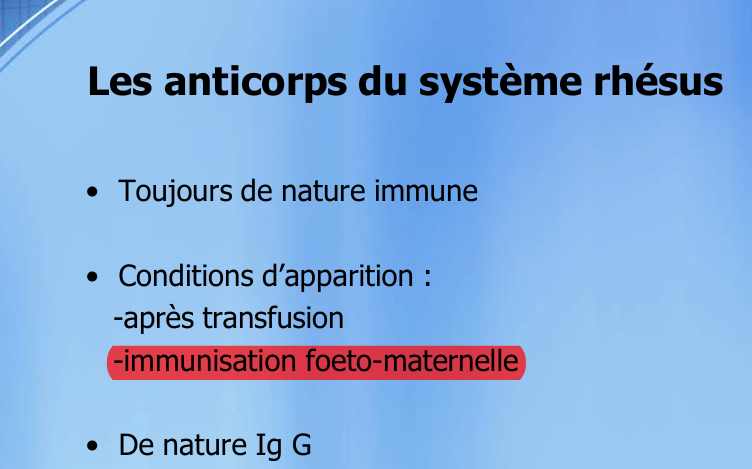
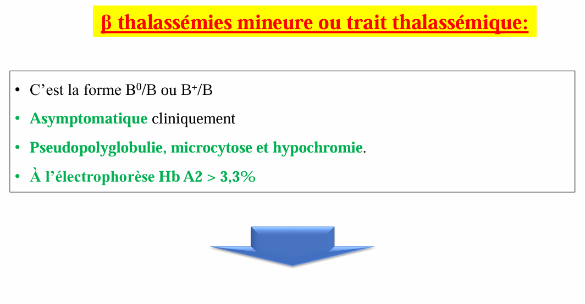

MODULE 01: ONCO_HEMATOLOGIE
QCM Corrigés & Justifiés
Partie 01: HEMATOLOGIE
1- Hématimètrie hémogramme normal et pathologique
Question 1 : -Chez un adulte la lymphopénie est :
(2016)
Réponse : A
Justification :
- A : Vrai — La lymphopénie chez l’adulte est définie par un taux de lymphocytes < 1000/mm³ (certains seuils retiennent < 800/mm³).
- B : Faux — 1 600 – 7 000/mm³ correspond aux valeurs normales des leucocytes totaux, pas des lymphocytes.
- C : Faux — Un pourcentage < 20 % n’est pas un critère absolu ; c’est la valeur absolue qui compte.
- D : Faux — Il s’agit d’une leucopénie, non d’une lymphopénie.
- E : Faux — Il s’agit d’une monocytopénie.
Question 2 : 2 -Le chiffre normal des plaquettes est de :
(2016)
Réponse : D
Justification :
- A : Faux — 15–40 G/L correspond à une thrombopénie sévère.
- B : Faux — 400 000–600 000/mm³ est une thrombocytose.
- C : Faux — L’unité est fausse (G/L au lieu de /mm³) ; la valeur normale est 150 000–400 000/mm³.
- D : Vrai — La norme est bien 150 000–400 000/mm³.
Question 3 : Chez l'adulte, une hyperlymphocytose sanguine est définie par une lymphocytose supérieure à:
(2016)
Réponse : 4
Justification :
- 1 : Faux — 30 % n’est pas un seuil absolu ; on utilise la valeur absolue.
- 2 : Faux — 60 % est un pourcentage, non la valeur absolue.
- 3 : Faux — 1 000/ml est la limite inférieure de la normale.
- 4 : Vrai — Une hyperlymphocytose est définie par des lymphocytes > 4 000/mm³ (ou 4 G/L).
- 5 : Faux — 10 000/mm³ est un seuil bien trop élevé, correspondant à une hyperleucocytose majeure.
Question 4 : - interprète le FNS suivant : (2025,sec A) GR: 2M Hb:8.5 g/dl Hte:25% VGM:125 fl ccmh:34% réticulocytes:140000
(2025,sec A)
Réponse : C
Justification :
- A : Faux — Normocytaire ? Non, VGM = 125 fl → macrocytaire.
- B : Faux — Normocytaire ? Non, VGM est élevé.
- C : Vrai — Anémie (Hb < 12 g/dl), macrocytaire (VGM > 100 fl), normochrome (CCMH ≥ 32 %), régénérative (réticulocytes > 120 000/mm³ en présence d’anémie).
- D : Faux — Hypochrome ? Non (CCMH = 34 %). Microcytaire ? Non (VGM = 125 fl).
- E : Faux — Mêmes erreurs que D.
Question 5 : - Aux dessous de quelle valeur on peut diagnostiquer une anémie pour une femme jeune (non enceinte) et homme jeune :
(2025,sec A)
Réponse : C
Question 6 : Les paramètres érythrocytaires les plus utiles en clinique sont :
(2026,sec B)
Réponse : A*
Justification :
- A : Vrai — (C, D, E) – Le VGM, la CCMH et le taux d’Hb sont les paramètres clés pour caractériser une anémie.
- B : Faux — Le diamètre globulaire moyen et l’épaisseur ne sont pas utilisés en routine.
- C : Faux —
- D : Faux —
- E : Faux —
Question 7 : Parmi les paramètres biologiques suivants, quels sont ceux qui permettent la caractérisation d'une anémie :
(2026,sec B)
Réponse : D*
Justification :
- A : Faux — L’hématocrite est utile mais ne caractérise pas à lui seul le type d’anémie.
- B : Vrai — Le VGM caractérise la taille (microcytaire/normocytaire/macrocytaire).
- C : Vrai — La CCMH caractérise la coloration (hypochrome/normochrome).
- D : Vrai — Le taux de réticulocytes caractérise l’origine (régénérative/arégénérative).
- E : Faux — Le RDW est un paramètre secondaire, non indispensable pour la caractérisation de base.
- La combinaison correcte est donc B, C, D → réponse D.
Question 8 : La combinaison correcte est donc B, C, D → réponse D. 8/ Un mégaloblaste est :
(2026,sec B)
Réponse : C*
Justification :
- A : Faux — Une hématie très macrocytaire est un macrocyte, pas un mégaloblaste.
- B : Faux — Un érythroblaste dans le sang est un érythroblaste circulant, pas spécifiquement un mégaloblaste.
- C : Vrai — Le mégaloblaste est un érythroblaste anormal caractérisé par un asynchronisme de maturation nucléo-cytoplasmique (noyau immature, cytoplasme mature).
- D : Faux — Un myéloblaste est un précurseur granulocytaire, non érythroïde.
- E : Faux — Le terme « leucoblaste » n’existe pas en hématologie standard.
2- Groupes sanguins et transfusions sanguines
Question 9 : 9 -Tous les produits sanguins suivants sont labiles sauf un, lequel ?
(2016)
Réponse : 1
Justification :
- 1 : Vrai — Les immunoglobulines anti-D sont des dérivés sanguins stables, obtenus par fractionnement plasmatique, et ne sont pas considérées comme des produits sanguins labiles (PSL).
- 2 : Faux — Le plasma frais congelé (PFC) est un PSL, il doit être conservé à –30 °C ou –80 °C.
- 3 : Faux — Le concentré de globules rouges phénotypé est un PSL (conservé à +4 °C).
- 4 : Faux — Les concentrés plaquettaires sont des PSL (conservés à température ambiante sous agitation, 5 jours).
- 5 : Faux — Le concentré de globules rouges standard est un PSL (conservé à +4 °C).
Question 10 : 10 - Le mécanisme physiopathologique d'immunisation fœto-maternelle dans le système rhésus est lié :
(2016)
Réponse : C
Justification :
- 1 : Faux — La bilirubine est un pigment issu de la dégradation de l’hémoglobine, elle n’est pas responsable de l’immunisation.
- 2 : Faux — Les leucocytes fœtaux ne sont pas impliqués dans l’allo-immunisation anti-Rhésus.
- 3 : Vrai — L’immunisation fœto-maternelle survient lors du passage d’hématies fœtales Rh positif dans la circulation d’une mère Rh négatif, ce qui déclenche la production d’anticorps anti-D chez la mère.
- 4 : Faux — Ce sont les hématies fœtales qui passent chez la mère, et non l’inverse (le passage maternel chez le fœtus est physiologique pour les IgG, mais c’est la conséquence, pas la cause première de l’immunisation maternelle).
- 5 : Faux — Le passage d’anticorps maternels chez le fœtus est la conséquence de l’immunisation, pas le mécanisme déclenchant.
Question 11 : Transfusions érythrocytaires
(2025,sec A)
Réponse : D
Justification :
- A : Faux — Un donneur AB ne peut pas donner à un receveur A, car les globules rouges AB portent les antigènes A et B, et le receveur A possède des anticorps anti-B qui vont lyser les globules du donneur.
- B : Faux — Un donneur AB ne peut pas donner à un receveur O, car le receveur O possède des anticorps anti-A et anti-B qui détruisent les globules AB.
- C : Faux — Un donneur A ne peut pas donner à un receveur B, car le receveur B possède des anticorps anti-A.
- D : Vrai — Un donneur O peut donner à un receveur AB, car les globules rouges O ne portent ni antigène A ni antigène B, ils ne seront donc pas détruits par les anticorps du receveur AB (qui n’en a pas). Le groupe O est le donneur universel pour les globules rouges.
- E : Faux — Un donneur B ne peut pas donner à un receveur A, car le receveur A possède des anticorps anti-B.
Question 12 : les transfusion érythrocytaire non Iso groupe suivant, quel est permise:
(2025,sec A)
Réponse : D
Justification :
- A : Faux — Donneur AB → receveur A : incompatible (anticorps anti-B du receveur).
- B : Faux — Donneur AB → receveur O : incompatible (anticorps anti-A et anti-B du receveur).
- C : Faux — Donneur A → receveur B : incompatible (anticorps anti-A du receveur).
- D : Vrai — Donneur O → receveur AB : compatible, car les globules O n’ont pas d’antigènes A ni B, et le receveur AB n’a pas d’anticorps anti-A ni anti-B.
- E : Faux — Donneur B → receveur A : incompatible (anticorps anti-B du receveur).
Question 13 : A qui un donneur AB peut donner son plasma?
(2025,sec A)
Réponse : E*
Justification :
- A : Vrai — Le plasma d’un sujet AB ne contient ni anticorps anti-A ni anti-B, il peut donc être transfusé à un receveur A.
- B : Vrai — À un receveur AB (iso-groupe), c’est compatible.
- C : Vrai — À un receveur O, le plasma AB est compatible car il n’y a pas d’anticorps dirigés contre les globules du receveur O (qui n’a pas d’antigènes A ou B).
- D : Vrai — À un receveur B, c’est également compatible.
- E : Vrai — Toutes les réponses sont justes : le plasma AB est universel pour le plasma, car il ne contient pas d’anticorps anti-A ni anti-B.
Question 14 : les anticorps anti-D sont:
(2026,sec A)

Réponse : B
Question 15 : L'épreuve sérique dans la détermination des groupes sanguins consiste à :
(2026,sec B)
Réponse : C*
Justification :
- A : Faux — Il s’agit de l’épreuve globulaire (Beth-Vincent), pas de l’épreuve sérique (Simonin).
- B : Faux — Les antigènes du système ABO sont fixés sur les globules rouges, ils ne sont pas libres dans le plasma.
- C : Vrai — L’épreuve sérique (Simonin) consiste à rechercher les anticorps circulants dans le plasma du sujet, en mettant son sérum en contact avec des hématies tests connues (A, B, O).
- D : Faux — La recherche d’anticorps fixés sur le complément n’est pas une technique de groupage ABO de routine.
- E : Faux — Les anticorps fixés sur les globules rouges ne sont pas recherchés par l’épreuve sérique.
Question 16 : Parmi ces complications de la transfusion sanguine, quelles sont celles qui sont précoces :
(2026,sec B)
Réponse : D*
Justification :
- A : Vrai — Le choc endotoxinique est un accident précoce (lié à une contamination bactérienne du produit).
- B : Faux — L’hémochromatose est une complication tardive (surcharge en fer après des transfusions répétées).
- C : Vrai — La réaction de type frisson-hyperthermie est un accident précoce (réaction immunologique ou pyrogène).
- D : Vrai — L’œdème aigu du poumon (OAP) est un accident précoce (surcharge circulatoire).
- E : Faux — L’hépatite virale est une complication tardive (transmission infectieuse).
- La combinaison correcte est A, C, D → réponse D.
Question 17 : La combinaison correcte est A, C, D → réponse D. 18/ Parmi ces antigènes, quels sont ceux qui appartiennent au système Rhésus ?
(2026,sec B)
Réponse : B,D,E*
Justification :
- A : Faux — L’antigène A appartient au système ABO, pas au système Rhésus.
- B : Vrai — L’antigène C appartient au système Rhésus (avec D, E, c, e).
- C : Faux — L’antigène B appartient au système ABO.
- D : Vrai — L’antigène D est l’antigène majeur du système Rhésus.
- E : Vrai — L’antigène E appartient au système Rhésus.
3- Hémostases primaire
Question 18 : Concernant le facteur Willebrand : cocher la réponse fausse.
(2026,sec A,B)
Réponse : E
Justification :
- A : Vrai — Le facteur Willebrand (vWF) participe à l'adhésion plaquettaire au sous-endothélium vasculaire après lésion.
- B : Vrai — Le vWF est le transporteur plasmatique du facteur VIII, le protégeant de la dégradation.
- C : Vrai — Le vWF se fixe sur la glycoprotéine Ib (GPIb) de la membrane plaquettaire, permettant l'adhésion.
- D : Vrai — Le vWF est synthétisé par les cellules endothéliales et les mégacaryocytes.
- E : Faux — Le facteur Willebrand est une protéine multimérisée (de gros multimères), et non hautement monomérisée. C'est précisément sa structure multimérique qui lui confère son activité hémostatique.
4- Coagulation et Fibrinolyse
Question 19 : 20 - Parmi les cinq facteurs suivants de la coagulation, un n'est pas vitamino K-dépendant, lequel ?
(2016)
Réponse : 4
Justification :
- 1 : Faux — Le facteur IX (antihémophilique B) est vitamine K-dépendant.
- 2 : Faux — Le facteur X (Stuart) est vitamine K-dépendant.
- 3 : Faux — Le facteur VII (proconvertine) est vitamine K-dépendant.
- 4 : Vrai — Le facteur V (proaccélérine) n'est pas vitamine K-dépendant.
- 5 : Faux — Le facteur II (prothrombine) est vitamine K-dépendant.
- Les facteurs vitamine K-dépendants sont : II, VII, IX, X (et aussi protéine C et S). Le facteur V est synthétisé par le foie mais n'a pas besoin de vitamine K.
- 21 - Parmi les tests de coagulation suivants, quel est celui que l'on doit utiliser en pratique pour
Question 20 : Les facteurs vitamine K-dépendants sont : II, VII, IX, X (et aussi protéine C et S). Le facteur V est synthétisé par le foie mais n'a pas besoin de vitamine K. 21 - Parmi les tests de coagulation suivants, quel est celui que l'on doit utiliser en pratique pour surveiller un traitement par l'héparine ?
(2016)
Réponse : 2
Justification :
- 1 : Faux — Le Thrombotest d'Owren est utilisé pour surveiller les anticoagulants oraux (AVK).
- 2 : Vrai — Le Temps de Céphaline Activée (TCA) est le test de référence pour surveiller l'héparine non fractionnée.
- 3 : Faux — Le Temps de Quick (TP) est utilisé pour surveiller les AVK, pas l'héparine.
- 4 : Faux — Le Temps de saignement explore l'hémostase primaire (plaquettes/vWF), pas l'héparine.
- 5 : Faux — Le Thromboélastogramme est un test global, non spécifique pour la surveillance de routine de l'héparine.
Question 21 : Parmi les facteurs plasmatiques ,indiquez le facteur commun à l'hémostase et la coagulation :
(2025,sec A)
Réponse : B*
Justification :
- A : Faux — Le facteur II (prothrombine) est un facteur de la coagulation, pas de l'hémostase primaire.
- B : Vrai — Le facteur Willebrand (vWF) est commun aux deux : il intervient dans l'hémostase primaire (adhésion et agrégation plaquettaire) et dans la coagulation (transport du facteur VIII).
- C : Faux — Le plasminogène est un facteur de la fibrinolyse, ni hémostase primaire ni coagulation.
- D : Faux — Le facteur XIII est un facteur de la coagulation (stabilisation du caillot).
- E : Faux — Le facteur V est un facteur de la coagulation (voie commune).
Question 22 : facteur de la voie commun :
(2026,sec A)
Réponse : a*
Justification :
- La voie commune de la coagulation fait intervenir les facteurs :
- Facteur I (fibrinogène)
- Facteur II (prothrombine)
- Facteur V (proaccélérine)
- Facteur X (Stuart)
- → Donc la combinaison I, II, V, X est correcte.
- Facteur VII appartient à la voie extrinsèque.
- Facteur XIII n'est pas dans la voie commune (il intervient après la formation du caillot).
- → Si l'item A correspond à I, II, V, X, c'est la bonne réponse.
Question 23 : La voie commune de la coagulation fait intervenir les facteurs : Facteur I (fibrinogène) Facteur II (prothrombine) Facteur V (proaccélérine) Facteur X (Stuart) → Donc la combinaison I, II, V, X est correcte. Facteur VII appartient à la voie extrinsèque. Facteur XIII n'est pas dans la voie commune (il intervient après la formation du caillot). → Si l'item A correspond à I, II, V, X, c'est la bonne réponse. 24/ Quels sont les facteurs de coagulation explorés par le TP ? (réponse fausse)
(2026,sec B)
Réponse : C*
Justification :
- Le Temps de Prothrombine (TP) explore la voie extrinsèque et la voie commune, donc les facteurs :
- Facteur II (A : Vrai)
- Facteur V (B : Vrai)
- Facteur VII (E : Vrai)
- Facteur X (D : Vrai)
- Facteur VIII (C : Faux) – le facteur VIII est exploré par le TCA (voie intrinsèque), pas par le TP.
- Donc la réponse fausse est C (facteur VIII).
5- Anémies ferriprives
Question 24 : - Tous ces tests sont nécessaires pour le diagnostic biologique d’une anémie ferriprive sauf un :
(2016)
Réponse : 2
Justification :
- 1 : Faux — Le taux de réticulocytes est utile pour montrer le caractère arégénératif de l'anémie (il est bas dans la carence martiale).
- 2 : Vrai — La Vitesse de Sédimentation (VS) n'est pas un test nécessaire au diagnostic d'une anémie ferriprive ; elle explore un syndrome inflammatoire, non le métabolisme du fer.
- 3 : Faux — L'hémogramme est indispensable pour objectiver l'anémie microcytaire hypochrome.
- 4 : Faux — Le frottis sanguin montre des globules rouges pâles, microcytaires, avec parfois des cellules cibles.
- 5 : Faux — Le dosage du fer sérique et le coefficient de saturation de la sidérophiline (transferrine) sont essentiels pour confirmer le diagnostic.
Question 25 : 26 - Une carence en fer engendre habituellement:
(2016)
Réponse : 3
Justification :
- 1 : Faux — La carence en fer n'engendre pas de thrombopénie ; elle peut même s'accompagner d'une thrombocytose réactionnelle modérée.
- 2 : Faux — L'anémie est bien microcytaire hypochrome, mais le taux de réticulocytes est faible (arégénérative), pas élevé.
- 3 : Vrai — La carence martiale donne typiquement une anémie microcytaire hypochrome arégénérative (réticulocytes bas).
- 4 : Faux — L'excès de sidéroblastes médullaires est observé dans les sidéroblastiques, pas dans la carence en fer.
- 5 : Faux — Le syndrome cordonal postérieur est une manifestation neurologique de la carence en vitamine B12, pas de la carence en fer.
Question 26 : Dans une carence martiale, pendant combien de temps le traitement par le fer doit être poursuivi ?
(2025,sec A,2026 sec A,B)
Réponse : E
Justification :
- A : Faux — 15 jours est insuffisant ; l'hémoglobine ne commence à remonter qu'après 3-4 semaines.
- B : Faux — 1 mois est trop court ; il faut poursuivre bien après la normalisation de l'hémoglobine.
- C : Faux — La normalisation du taux d'Hb est un objectif intermédiaire, mais les réserves en fer (ferritine) restent basses encore plusieurs semaines.
- D : Faux — Le fer sérique se normalise rapidement mais ne reflète pas les réserves.
- E : Vrai — Le traitement par le fer doit être poursuivi jusqu'à la normalisation de la ferritine (réserves en fer reconstituées), soit environ 3 à 6 mois après la correction de l'anémie.
Question 27 : concernant carence martial :
(2025,sec A)
Réponse : 2
Justification :
- Une anémie ferriprive typique est :
- Arégénérative (réticulocytes < 120 000/mm³) → item 2 Vrai
- Microcytaire (VGM < 80 fl) → item 3 Faux (elle n'est pas macrocytaire)
- Hypochrome (CCMH < 32 % ou TCMH < 27 pg) → item 4 Faux (elle n'est pas normochrome)
Question 28 : Une anémie ferriprive typique est : Arégénérative (réticulocytes < 120 000/mm³) → item 2 Vrai Microcytaire (VGM < 80 fl) → item 3 Faux (elle n'est pas macrocytaire) Hypochrome (CCMH < 32 % ou TCMH < 27 pg) → item 4 Faux (elle n'est pas normochrome) 29/ Toutes les propositions suivantes concernent le métabolisme du fer sont vraies sauf une. Laquelle ?
(2025,sec A)
Réponse : B
Justification :
- A : Vrai — Le métabolisme du fer est en circuit fermé (vase-clos) : le fer est constamment recyclé à partir des hématies sénescentes.
- B : Faux — Les laitages et la farine ne sont pas riches en fer. Les aliments les plus riches en fer sont : viande rouge, abats, légumineuses, épinards, etc.
- C : Vrai — Le fer se répartit en fer héminique (d'origine animale) et non héminique (d'origine végétale).
- D : Vrai — Les pertes en fer sont faibles (environ 1 mg/jour) et compensées par les apports chez le sujet normal.
- E : Vrai — Le transport du fer dans le plasma est assuré par la transferrine (ou sidérophiline).
Question 29 : Chez une patiente de 35 ans qui présente une anémie ferriprive, je recherche en premier une des étiologies suivantes :
(2026,sec B)
Réponse : D*
Justification :
- A : Faux — Un saignement digestif est une cause fréquente mais surtout chez le sujet âgé ou en présence de signes digestifs ; ce n'est pas la première cause chez une femme jeune.
- B : Faux — Une malabsorption est une cause possible (maladie cœliaque, gastrectomie), mais moins fréquente que les pertes gynécologiques.
- C : Faux — Un manque d'apport (carence d'apport) est rare chez l'adulte en pays industrialisé, sauf régimes stricts.
- D : Vrai — Chez une femme en âge de procréer (35 ans), la cause la plus fréquente d'anémie ferriprive est le saignement gynécologique (ménorragies, métrorragies). C'est donc la première étiologie à rechercher.
- E : Faux — La diarrhée chronique est une cause possible mais rare et non prioritaire chez une femme jeune sans autre signe.
6- Anémie par carence en facteurs antipernicieux
Question 30 : 31 -Une anémie microcytaire hypochrome peut se rencontrer en cas de :
(2016)
Réponse : A
Justification :
- 1 : Faux — La microsphérocytose héréditaire donne une anémie hémolytique normocytaire ou macrocytaire, jamais microcytaire hypochrome.
- 2 : Vrai — La bêta-thalassémie homozygte donne une anémie microcytaire hypochrome (par défaut de synthèse des chaînes globiniques).
- 3 : Faux — Le rachitisme carentiel (carence en vitamine D) n'entraîne pas d'anémie microcytaire hypochrome.
- 4 : Vrai — L'anémie ferriprive est la cause la plus fréquente d'anémie microcytaire hypochrome.
- 5 : Faux — Le déficit en acide folique donne une anémie macrocytaire (mégaloblastique), pas microcytaire hypochrome.
Question 31 : 32 - Devant une carence en vitamine B12, indiquez la seule anomalie qui ne soit jamais en cause :
(2016)
Réponse : 1
Justification :
- 1 : Vrai — L'insuffisance hépatique n'est pas une cause de carence en vitamine B12. Le foie est le site de stockage (réserve de 2 à 5 mg), mais son insuffisance n'entraîne pas de carence en B12.
- 2 : Faux — La gastrectomie totale est une cause classique de carence en B12 (par carence en facteur intrinsèque).
- 3 : Faux — La maladie de l'iléon (résection, pullulation microbienne, etc.) est une cause de carence en B12 (site d'absorption iléal).
- 4 : Faux — L'absence de sécrétion de facteur intrinsèque (maladie de Biermer, gastrite atrophique) est la cause la plus fréquente de carence en B12.
- → La seule anomalie qui n'est jamais en cause est l'insuffisance hépatique → réponse 1.
Question 32 : → La seule anomalie qui n'est jamais en cause est l'insuffisance hépatique → réponse 1. 33 - Le lieu principal d'absorption active de l'acide folique est :
(2016)
Réponse : 5
Justification :
- 1 : Faux — L'iléon terminal est le site d'absorption de la vitamine B12, pas de l'acide folique.
- 2 : Faux — L'iléon intermédiaire n'est pas le site principal d'absorption des folates.
- 3 : Faux — Le duodénum est un site d'absorption, mais pas le principal pour l'acide folique
- 4 : Faux — L'estomac n'absorbe pas l'acide folique.
- 5 : Vrai — L'acide folique est absorbé au niveau du duodénum et du jéjunum proximal
Question 33 : La vitamine B12 est absorbée au niveau de :
(2025,sec A)
Réponse : C
Justification :
- A : Faux — Le duodénum n'est pas le site d'absorption de la B12.
- B : Faux — Le jéjunum n'est pas le site d'absorption de la B12 (c'est le site des folates).
- C : Vrai — La vitamine B12 est absorbée au niveau de l'iléon terminal
- D : Faux — Le côlon droit n'absorbe pas la B12.
- E : Faux — L'estomac sécrète le facteur intrinsèque mais n'absorbe pas la B12.
Question 34 : épuisement en facteur B12 après : RJ
(2025,sec A)
Réponse : D
Justification :
- A : Faux — Une semaine est beaucoup trop courte.
- B : Faux — Quatre mois correspond à l'épuisement des réserves en folates (3 à 4 mois), pas en B12.
- C : Faux — Un an est insuffisant pour épuiser les réserves en B12.
- D : Vrai — Les réserves hépatiques en vitamine B12 (2 à 5 mg) couvrent 3 à 5 ans Donc l'épuisement survient après plus de 3 ans.
- E : Faux — "Plus d'un an" est trop vague et inférieur à la réalité.
7- Anémies hémolytiques acquises
Question 35 : Quel est le principal site d'élimination des hématies chez un malade présentant une anémie hémolytique auto-immune causée par des anticorps IgG ?
(2016)
Réponse : 5
Justification :
- 1 : Faux — Les ganglions lymphatiques ne sont pas le site principal de destruction des GR sensibilisés par des IgG.
- 2 : Faux — La lyse intravasculaire est surtout observée avec les anticorps IgM (fixant le complément), pas avec les IgG.
- 3 : Faux — Le foie participe à la destruction, mais ce n'est pas le site principal pour les IgG.
- 4 : Faux — La moelle osseuse n'est pas un site de destruction des GR circulants.
- 5 : Vrai — Les anticorps IgG sont optimaux à 37°C et entraînent une hémolyse intratissulaire, principalement au niveau de la rate (phagocytose par les macrophages spléniques). Le cours précise que les AHAI à IgG donnent une hémolyse chronique intratissulaire.
Question 36 : -Parmi les moyens thérapeutiques de l'anémie hémolytique auto-immune :
(2025,sec A)
Réponse : A
Justification :
- A : Vrai — La corticothérapie est le traitement de fond de première intention des AHAI à anticorps chauds (1 mg/kg/j).
- B : Faux — La splénectomie est indiquée en cas d'échec ou de rechute après corticothérapie.
- C : Faux — L'immunothérapie (immunosuppresseurs : cyclophosphamide, ciclosporine, rituximab) est utilisée en cas d'échec des corticoïdes et de la splénectomie.
- D : Faux — La transfusion de culots globulaires est un traitement symptomatique (en cas d'anémie mal tolérée), mais ce n'est pas un moyen thérapeutique spécifique de l'AHAI ; elle peut même être difficile en raison des auto-anticorps.
8- Anémies hémolytiques constitutionnelles
Question 37 : Parmi les anémies hémolytiques congénitales, quelles sont celles qui se manifestent cliniquement à la naissance :
(2016)
Réponse : E
Question 38 : concernant la crise vasculaire exclusive :
(2025,sec A)
Réponse : Détail ci-dessous
Question 39 : parmi les confirmation suivant laquelle qui correspond à béta thalassémie mineur
(2025,sec A)

Réponse : B
Question 40 : Justification: [IMAGE: media/image2.png] 41/ Dans la drépanocytose homozygote, le profil électrophorétique est le suivant :
(2026,sec B)
Réponse : A*
Justification :
- A : Vrai — Dans la drépanocytose homozygote S/S : HbS = 80-95 %, HbA = absente (0 %), HbF = 1-10 %, HbA2 = 2-4 %. :
- HBA : Absente – Le gène de la chaîne beta globine normale n'est pas exprimé.
- HBS : Majoritaire (80-95%) – L'hémoglobine anormale (HbS) remplace la quasi-totalité de l'hémoglobine normale.
- HBF : 1-10% – L'hémoglobine fœtale persiste de manière variable pour compenser l'anémie.
- HBA2 : 2-4% – Le taux de l'hémoglobine A2 reste dans les valeurs normales ou discrètement élevé
- B : Faux — Ce profil correspond à un trait drépanocytaire (hétérozygote S/A) : HbS ≈ 40 %, HbA ≈ 50-60 %.
- C : Faux — Ce profil est celui d'un sujet normal (HbA ≈ 96-98 %).
- D : Faux — HbF à 95 % correspond à un nouveau-né ou à un profil thalassémique, pas à une drépanocytose homozygote.
- E : Faux — HbA2 à 55 % est impossible dans une drépanocytose.
Question 41 : Le syndrome dysmorphique dans les anémies hémolytiques congénitales est plus marqué chez :
(2026,sec B)
Réponse : A*
Justification :
- A : Vrai — Le syndrome dysmorphique (faciès mongoloïde, modifications osseuses, etc.) est très marqué dans la bêta-thalassémie majeure (maladie de Cooley), en raison de l'hyperplasie érythroblastique avec expansion médullaire.
- B : Faux — Les drépanocytaires homozygotes ont un retard staturo-pondéral moins marqué et un syndrome dysmorphique beaucoup moins fréquent.
- C : Faux — Le déficit en G6PD ne donne pas de syndrome dysmorphique.
- D : Faux — La microsphérocytose héréditaire ne donne pas de dysmorphie.
- E : Faux — Seule la thalassémie majeure donne ce tableau.
Question 42 : L'hypersplénisme dans la bêta-thalassémie majeure :
(2026,sec B)
Réponse : B*
Justification :
- A : Faux — L'hypersplénisme est un mécanisme périphérique de destruction des cellules sanguines, pas central.
- B : Vrai — L'hypersplénisme est à l'origine de cytopénies périphériques (séquestration et destruction accélérée des GR, GB et plaquettes dans la rate).
- C : Faux — La ponction de moelle montre une moelle riche (hyperplasie), elle ne définit pas le mécanisme de l'hypersplénisme.
- D : Faux — L'hypersplénisme est une augmentation pathologique du volume de la rate (splénomégalie), pas du foie.
- E : Faux — L'hypersplénisme n'est pas une crise vaso-occlusive abdominale.
9- Purpura thrombopénique immunologique
Question 43 : Chez un adulte atteint de PTI (Purpura Thrombopénique Idiopathique) aigu, quel est le traitement de 1re intention ?
(2025,sec A)
Réponse : B
Justification :
- A : Faux — La transfusion de plaquettes n'est pas le traitement de 1re intention ; elle est réservée aux hémorragies menaçant le pronostic vital.
- B : Vrai — La corticothérapie (prednisone 1 mg/kg/j ou dexaméthasone) est le traitement de première ligne du PTI.
- C : Faux — "NIPLOE" (vraisemblablement une erreur de frappe pour "Nplate" = romiplostim) est un agoniste de la TPO, utilisé en 2e ligne.
- D : Faux — La splénectomie est un traitement de 2e ligne, après 12 mois d'évolution.
- E : Faux — Les androgènes (danazol) sont utilisés en 2e ou 3e ligne.
Question 44 : Au cours d'un purpura immunologique idiopathique, le syndrome hémorragique est :
(2026,sec B)
Réponse : C*
Justification :
- A : Faux — Le syndrome hémorragique dans les atteintes plaquettaires (comme le PTI) est superficiel (cutanéo-muqueux). Les hématomes profonds et les hémarthroses sont caractéristiques des troubles de la coagulation (ex: hémophilie).
- B : Faux — Il apparaît spontanément sans nécessiter de traumatisme majeur.
- C : Vrai — Par définition, le purpura (qu'il soit d'origine hématologique comme le PTI ou vasculaire) se caractérise par des lésions hémorragiques cutanéo-muqueuses qui surviennent de manière essentiellement spontanée (ou à la suite de traumatismes minimes).
- D : Faux — Le PTI est dans la grande majorité des cas une maladie bénigne, en particulier chez l'enfant où l'évolution est souvent spontanément résolutive. La gravité dépend de la profondeur de la thrombopénie et de la présence de signes muqueux/viscéraux majeurs.
- E/ Faux – Cette proposition est un piège. Si le syndrome hémorragique du PTI associe classiquement des atteintes cutanées et muqueuses (épistaxis, gingivorragies), il n'est pas uniquement ou spécifiquement "muqueux" ; la caractéristique fondamentale qui définit le mécanisme et l'apparition de ce purpura reste son caractère spontané
10- Cytopénie et aplasie médullaire
Question 45 : 36 -Dans une insuffisance médullaire, il y’a :
(2016)
Réponse : E
Justification :
- 1 : Vrai — La fièvre (syndrome infectieux) est présente dans l'insuffisance médullaire par neutropénie.
- 2 : Vrai — Le purpura (syndrome hémorragique) est présent par thrombopénie.
- 3 : Faux — L'hypertrophie gingivale se voit dans les leucémies aiguës myélomonocytaires, pas dans l'aplasie médullaire.
- 4 : Faux — La splénomégalie est absente dans l'aplasie médullaire (absence de syndrome tumoral).
- 5 : Vrai — L'anémie est constante dans l'insuffisance médullaire.
Question 46 : 37 - Lequel de ces critères ne fait pas partie des critères de Camitta pour l’aplasie médullaire :
(2016)
Réponse : 2
Justification :
- Les critères de Camitta sont :
- PLQ < 20 000/mm³ (item 3 : en fait partie)
- Réticulocytes < 20 000/mm³ (item 1 : en fait partie)
- PNN < 500/mm³ (item 4 : en fait partie)
- 2 : Vrai — (ne fait pas partie) – Le taux de lymphocytes ne figure pas dans les critères de Camitta.
- → Réponse : 2.
Question 47 : → Réponse : 2. 38 - Lequel de ces signes n’est pas retrouvé au cours de l’aplasie médullaire idiopathique :
(2016)
Réponse : 3
Justification :
- 1 : Faux — Le syndrome infectieux est retrouvé (neutropénie).
- 2 : Faux — Le syndrome anémique est retrouvé (anémie constante).
- 3 : Vrai — Les adénopathies périphériques ne sont pas retrouvées dans l'aplasie médullaire (absence de syndrome tumoral).
- 4 : Faux — Epistaxis et gingivorragies sont retrouvés (syndrome hémorragique).
Question 48 : Devant une pancytopénie isolée sur le plan clinique, quel examen permet d'affirmer l'existence d'une aplasie médullaire ?
(2016)
Réponse : 2
Justification :
- 1 : Faux — Le myélogramme montre une moelle pauvre mais ne permet pas toujours de distinguer une aplasie d'une infiltration.
- 2 : Vrai — La biopsie ostéo-médullaire (BOM/PBO) est l'examen clé qui confirme la raréfaction du tissu hématopoïétique (nappe graisseuse, absence de fibrose, absence d'infiltration).
- 3, 4, 5 : Faux — Ces examens ne sont pas utilisés pour le diagnostic de certitude.
Question 49 : 3, 4, 5 : Faux – Ces examens ne sont pas utilisés pour le diagnostic de certitude. 40/- l'examen biologique qui permet de confirmer le diagnostique de l'aplasie médullaire :
(2025,sec A)
Réponse : C
Justification :
- A : Faux — Le myélogramme est un examen d'orientation, pas de certitude.
- B : Faux — Le frottis sanguin montre la pancytopénie mais ne confirme pas l'aplasie.
- C : Vrai — La B.P.O (Biopsie de la Poche Ostéo-médullaire / Biopsie Ostéo-Médullaire) est l'examen de certitude.
- D, E : Faux — La cytométrie en flux et l'immunohistochimie ne sont pas les examens de confirmation.
Question 50 : D, E : Faux – La cytométrie en flux et l'immunohistochimie ne sont pas les examens de confirmation. 41/Tous les signes cliniques et biologiques suivant peuvent se voir en cas d'Aplasie Médullaire sauf un:
(2025,sec A,2026 sec A,B)
Réponse : B
Justification :
- A : Vrai — Les bulles endobuccales (manifestation hémorragique) peuvent se voir.
- B : Faux — Les douleurs osseuses ne se voient pas dans l'aplasie médullaire ; elles évoquent une leucémie aiguë ou un envahissement médullaire.
- C : Vrai — La leuco-neutropénie est constante.
- D : Vrai — La lymphocytose relative est présente (inversion de la formule).
- E : Vrai — La pancytopénie est constante.
Question 51 : -tous ces signes se trouvent dans l'aplasie médullaire sauf: (2025 sec A,2026 sec A) A_ spm B_ sd inflammatoire C_ sd anémique D_ sd hémorragique E_ malformations osseuses
(2025 sec A,2026 sec A)
Réponse : E
Question 52 : Le diagnostic de certitude d'une aplasie médullaire repose sur :
(2026,sec B)
Réponse : D*
Justification :
- A : Faux — Le myélogramme est un examen d'orientation.
- B : Faux — Le frottis de sang ne confirme pas.
- C : Faux — La cytométrie en flux n'est pas l'examen de certitude.
- D : Vrai — La biopsie médullaire est l'examen de certitude (examen clé).
- E : Faux — L'immunohistochimie n'est pas l'examen de référence.
11- Leucoses aigués
Question 53 : 44 - Une leucémie aigüe est définie par un pourcentage de blastes dans la moelle :
(2016)
Réponse : 3
Justification :
- 1 : Faux — Entre 20 et 30 % n'est pas la définition.
- 2 : Faux — Supérieur à 30 % est trop restrictif.
- 3 : Vrai — Le seuil est ≥ 20 % de blastes dans la moelle (selon l'OMS).
- 4 : Faux — Le taux de blastes est indispensable au diagnostic.
- 5 : Faux — Un taux de plasmocytes > 10 % évoque un myélome, pas une leucémie aiguë.
Question 54 : lequelle est présente de manière constante au cours de leucémie aigüe :
(2025,sec A)
Réponse : D
Justification :
- A : Faux — La blastose sanguine peut être absente (blastes absents du sang périphérique).
- B : Faux — La pancytopénie est fréquente mais pas constante (le taux de GB peut être normal ou augmenté).
- C : Faux — L'hyperuricémie peut être absente.
- D : Vrai — La blastose médullaire (≥ 20 % de blastes dans la moelle) est constante et définit la maladie.
- E : Faux — L'hyperleucocytose n'est pas constante (le taux de GB peut être normal ou diminué).
Question 55 : leucémie aiguë est définie par toux de blastose médullaire sup à: (2025,sec A) C10%.
(2025,sec A)
Réponse : B
Justification :
- A : Faux — 15 % est insuffisant.
- B : Vrai — Le seuil est 20 %.
- C : Faux — 10 % est insuffisant.
- D : Faux — 30 % est trop élevé (seuil dépassé).
- E : Faux — 5 % correspond à une rémission complète.
12- Syndrome myeloprolifertifs chronique
Question 56 : les critères communs dans le syndrome myéloprolifiratife sauf un :
(2025,sec A,2026 sec A)
Réponse : E
Justification :
- A : Vrai — La splénomégalie est commune aux SMP.
- B : Vrai — L'évolution vers la leucémie aiguë est possible dans tous les SMP.
- C : Vrai — Les thromboses veineuses sont communes (risque thrombotique).
- D : Vrai — L'hyperuricémie est commune (turnover cellulaire élevé).
- E : Faux — Le chromosome Philadelphie est spécifique de la LMC, pas commun à tous les SMP.
Question 57 : splénomégalie fait hyperleucocytose ,PNN et de myéloïde fait évoquée le diagnostique :
(2025,sec A,2026 sec A)
Réponse : B
Justification :
- Leucémie aiguë myéloïde : pas de myélémie harmonieuse, blastose > 20 %.
- Leucémie myéloïde chronique : splénomégalie + hyperleucocytose + myélémie ≥ 20 % harmonieuse + PNN. C'est le tableau typique.
- Leucémie lymphoïde chronique : hyperlymphocytose, pas de myélémie.
- Lymphome splénique : pas d'hyperleucocytose avec myélémie.
- Leucémie aiguë lymphoïde : blastose, pas de myélémie.
Question 58 : Leucémie aiguë myéloïde : pas de myélémie harmonieuse, blastose > 20 %. Leucémie myéloïde chronique : splénomégalie + hyperleucocytose + myélémie ≥ 20 % harmonieuse + PNN. C'est le tableau typique. Leucémie lymphoïde chronique : hyperlymphocytose, pas de myélémie. Lymphome splénique : pas d'hyperleucocytose avec myélémie. Leucémie aiguë lymphoïde : blastose, pas de myélémie. 49/.Sd de Richert correspond a une définition
(2025,sec A)
Réponse : A
Justification :
- A : Vrai — Le syndrome de Richter est la transformation de la LLC en lymphome de haut grade de malignité (lymphome diffus à grandes cellules B).
- B : Faux — L'infiltration par des cellules de Reed-Sternberg évoque la maladie de Hodgkin.
- C : Faux — LLC stade C n'est pas le syndrome de Richter.
- D : Faux — L'infiltration médullaire par un lymphome de haut grade n'est pas la définition.
- E : Faux — La transformation en LAL est rare et ne définit pas le syndrome de Richter.
Question 59 : Qst Rj : dans les LLC stade B les adénopathies sont : (2026,sec A) -La combinaison A - abc B - ac C - bd D – abcd
(2026,sec A)
Réponse : B
Question 60 : le pronostic de la LMC est amélioré grâce à la l'élaboration de:
(2026,sec A)
Réponse : A
Justification :
- A : Vrai — La thérapie ciblée (inhibiteurs de tyrosine kinase : imatinib) a révolutionné le pronostic de la LMC.
- B : Faux — La chimiothérapie intensive n'est pas le traitement de référence.
- C : Faux — L'autogreffe n'est pas le traitement de choix.
- D : Faux — L'allogreffe est réservée aux cas résistants ou en phase accélérée.
Question 61 : Dans LLC ,l'anémie est une signe de mauvais pronostique, elle peut être secondaire à: (2026,sec A) A( a,b,c) B (a,c) C (b,d) D (d) E (a,b,c,d)
(2026,sec A)
Réponse : A
Justification :
- A : Vrai — Infiltration médullaire par les lymphocytes clonaux.
- B : Vrai — Immunologique par des Ac contre les GR (AHAI).
- C : Vrai — Permet de passer du stade B au stade C.
- D : Faux — Traitée par le fer ? Non, sauf carence martiale associée.
Question 62 : La myélémie :
(2026,sec B)
Réponse : D
Justification :
- A : Faux — La myélémie n'est pas physiologique (sauf chez le nouveau-né).
- B : Faux — La myélémie signifie la présence de précurseurs granuleux, pas de blastes.
- C : Faux — La présence de précurseurs érythrocytaires s'appelle érythroblastose.
- D : Vrai — La myélémie peut se voir dans les syndromes myéloprolifératifs (LMC+++).
- E : Faux — Les syndromes lymphoprolifératifs ne donnent pas de myélémie.
Question 63 : Le diagnostic de LLC est basé sur :
(2026,sec B)
Réponse : B*
Justification :
- A : Faux — Score de Matutes < 4 est en faveur d'un lymphome, pas d'une LLC.
- B : Vrai — Syndrome tumoral + hyperlymphocytose constante + immunophénotypage avec score de Matutes > 4.
- C : Faux — L'immunophénotypage seul ne suffit pas.
- D : Faux — Même libellé que B, mais avec une répétition.
- E : Faux — Thrombocytose constante ? Non, la thrombopénie peut être présente.
Question 64 : Le diagnostic de la LMC est basé sur :
(2026,sec B)
Réponse : D*
Justification :
- A : Faux — Myélémie > 20 % mais il manque le taux de blastes < 5 %.
- B : Faux — Myélémie < 20 % est insuffisant pour le diagnostic.
- C : Faux — Myélémie < 5 % est insuffisant.
- D : Vrai — Splénomégalie + hyperleucocytose + myélémie > 20 % + blastes < 5 % + chromosome Philadelphie (BCR-ABL).
- E : Faux — Hyperlymphocytose ? Non, il s'agit d'une hyperleucocytose à PNN.
13- Lymphomes Hodgkiniens et non Hodgkiniens
Question 65 : Un patient âgé de 50 ans + LNH (lymphome non hodgkinien) Bilan d'extension : AMG à 20 kg → 6 mois +Sueurs nocturnes + Sd tumoral périphérique :ADP cervicale gauche + Sd tumoral profond :ADP médiastinale Selon la classification d’Ann Arbor(2025,sec A) A→IIA B →IIB C →IIIA D→IV
(2025,sec A)
Réponse : B
Justification :
- Atteinte de 2 aires ganglionnaires (cervicale + médiastinale) du même côté du diaphragme → Stade II.
- Présence de signes généraux (AEG, sueurs nocturnes) → B.
- Donc IIB.
- → Réponse : B.
Question 66 : Atteinte de 2 aires ganglionnaires (cervicale + médiastinale) du même côté du diaphragme → Stade II. Présence de signes généraux (AEG, sueurs nocturnes) → B. Donc IIB. → Réponse : B. 58/ Concernant les lymphome malin non HDK , proposition juste:
(2025,sec A)
Réponse : B
Justification :
- A : Faux — Les LNH sont plus fréquents que la maladie de Hodgkin.
- B : Vrai — Les LNH forment un groupe hétérogène (nombreuses entités).
- C : Faux — Ils peuvent être ganglionnaires ou extra-ganglionnaires.
- D Faux – Ils sont le plus souvent de type B (pas T).
- E : Faux — Il existe des LNH indolents et des LNH agressifs.
Question 67 : Parmi les propositions suivantes, laquelle concerne le lymphome Hodgkin
(2025,sec A)
Réponse : B
Justification :
- A : Faux — Le lymphome de Hodgkin n'est pas l'hémopathie maligne la plus fréquente.
- B : Vrai — La présence de cellules de Reed-Sternberg est pathognomonique.
- C : Faux — L'extension peut être lymphatique, hématogène ou par contiguïté.
- D : Faux — Le diagnostic repose sur la biopsie ganglionnaire, pas la ponction.
- E : Faux — "CMF" ne correspond pas à une proposition valide.
Question 68 : Les scores pronostiques utilisés dans les lymphomes malins non hodgkiniens sont (RF)
(2025,sec A,2026 sec A)
Réponse : D
Question 69 : Au cours des lymphomes, qu'appelle-t-on signes généraux ?
(2026,sec B)
Réponse : A*
Justification :
- A : Vrai — Les signes généraux (critères B d'Ann Arbor) sont : fièvre > 38°C, amaigrissement > 10 % du poids, sueurs nocturnes.
- B : Faux — Anorexie, asthénie, amaigrissement ne sont pas les critères B stricts.
- C : Faux — Cytopénies et syndrome tumoral ne sont pas des signes généraux.
- D : Faux — Le syndrome tumoral n'en fait pas partie.
- E : Faux — Les adénopathies ne sont pas un signe général.
14- Myélome multiple et maladie de Waldenstrom
Question 70 : Tous les éléments suivants sont utilisés pour apprécier la masse tumorale d’un myélome sauf un lequel ?
(2025,sec A,2026 sec A,B)
Réponse : C
Justification :
- A : Vrai — La concentration du composant monoclonal fait partie des critères de Salmon et Durie.
- B : Vrai — Les lésions osseuses font partie des critères.
- C : Faux — La VS n'est pas un critère de masse tumorale.
- D : Vrai — Le dosage de l'Hb fait partie des critères.
- E : Vrai — Le dosage du Ca²⁺ fait partie des critères.
Question 71 : Le maître symptôme du myélome multiple est :
(2025,sec A, 2026 sec B)
Réponse : D
Justification :
- A : Faux — Le vertige n'est pas le maître symptôme.
- B : Faux — La fièvre n'est pas typique.
- C : Faux — Les ADP sont absentes dans le myélome.
- D : Vrai — La douleur osseuse est le maître symptôme (70 % des cas au diagnostic).
- E : Faux — L'hémorragie n'est pas le maître symptôme.
Question 72 : en cas d'électrophorèse qui montre une gammapathie monoclonale avec des examen clinique et paraclinique normales ,en suspect :
(2025,sec A)
Réponse : D
Justification :
- A : Faux — On attend des signes de myélome : anémie, insuffisance rénale, hypercalcémie, lésions osseuses, ou autres critères de myélome
- B : Faux — C’est une prolifération myéloïde avec hyperleucocytose et présence de BCR-ABL1
- C : Faux —
- D : Vrai — Pic monoclonal + absence de signes de maladie d’organe ou de myélome
- E : Faux —
Question 73 : La maladie de Waldenström est un syndrome lymphoprolifératif caractérisé par : (cochez la réponse fausse)
(2025,sec A,2026 sec B)
Réponse : A
Justification :
- A : Faux — (réponse fausse) – Les lésions osseuses diffuses ne font pas partie de la maladie de Waldenström (contrairement au myélome).
- B : Vrai — Pathologie du sujet âgé.
- C : Vrai — Le maître symptôme est l'hyperviscosité sanguine.
- D : Vrai — Infiltration médullaire par > 30 % de lympho-plasmocytes.
- E : Vrai — IgM monoclonale à l'immunofixation.
Question 74 : Dans la maladie de Waldenström, la prolifération cellulaire maligne concerne :
(2026,sec B)
Réponse : B*
Justification :
- A : Faux — Les plasmocytes concernent le myélome.
- B : Vrai — Les lympho-plasmocytes sont la cellule caractéristique.
- C : Faux — Les blastes concernent les leucémies aiguës.
- D : Faux — Les lymphocytes matures concernent la LLC.
- E : Faux — Les prolymphocytes concernent la leucémie prolymphocytaire.
Question 75 : Dans l'exploration du myélome, tous ces examens sont indispensables sauf un. Lequel ?
(2026,sec B)
Réponse : E*
Justification :
- A : Vrai — Le myélogramme est indispensable (infiltration plasmocytaire > 10 %).
- B : Vrai — Le dosage de la calcémie est indispensable (critère CRAB).
- C : Vrai — Le dosage de la créatinine est indispensable (critère CRAB).
- D : Vrai — La radiographie osseuse est indispensable (lésions lytiques).
- E : Faux — La TDM cervico-thoraco-abdomino-pelvienne n'est pas indispensable dans le bilan initial du myélome.
Question 76 : Quel est votre diagnostic devant une gammapathie monoclonale avec myélogramme, bilan radiologique, NFS, calcémie et créatinine normaux ?
(2026,sec B)
Réponse : D*
Justification :
- A : Faux — Le myélome multiple est symptomatique (CRAB).
- B : Faux — La LLC ne donne pas de gammapathie monoclonale typique.
- C : Faux — Le lymphome folliculaire peut donner une gammapathie, mais le contexte est différent.
- D : Vrai — Une gammapathie monoclonale isolée avec bilan normal = MGUS.
- E : Faux — Le diagnostic de MGUS est possible.
15- Pathologies de l’hémostase primaire
Question 77 : 69 - Chez un malade dont le taux de plaquettes est de 200 000/mm3 le temps de saignement est habituellement normal dans l'une des circonstances suivantes: Laquelle?
(2016)
Réponse : 1
Justification :
- 1 : Vrai — Le purpura rhumatoïde (vascularite) est une atteinte vasculaire ; la numération plaquettaire est normale (200 000/mm³) et le temps de saignement est normal car les plaquettes sont normales en nombre et en fonction.
- 2 : Faux — L'aspirine altère la fonction plaquettaire (thrombopathie acquise) et allonge le TS.
- 3 : Faux — Les thrombopathies constitutionnelles (Bernard-Soulier, Glanzmann) allongent le TS.
- 4 : Faux — Le myélome multiple peut donner des anomalies de l'hémostase (thrombopathie, hyperviscosité) et allonger le TS.
- 5 : Faux — L'insuffisance rénale donne une thrombopathie acquise et allonge le TS.
16- Pathologies de la coagulation
Question 78 : Les manifestations hémorragiques suivantes sont d'observation courante dans l'hémophilie, sauf une, laquelle?
(2016)
Réponse : 3
Justification :
- 1 : Vrai — L'hémarthrose du genou est typique de l'hémophilie.
- 2 : Vrai — L'hématurie peut se voir dans l'hémophilie.
- 3 : Faux — Le purpura pétéchial spontané généralisé est une manifestation de l'atteinte plaquettaire (thrombopénie/thrombopathie), pas de l'hémophilie (anomalie de la coagulation).
- 4 : Vrai — L'hématome du psoas est typique (hématome profond).
- 5 : Vrai — L'hémorragie prolongée après morsure de la langue est fréquente.
Question 79 : Une anomalie sévère de la coagulation plasmatique peut favoriser la survenue des manifestations hémorragiques suivantes, sauf une, laquelle?
(2016)
Réponse : 2
Justification :
- 1 : Vrai — Les hémarthroses sont typiques des anomalies de la coagulation.
- 2 : Faux — Le purpura pétéchial est une manifestation de l'atteinte plaquettaire (hémostase primaire), pas de la coagulation plasmatique.
- 3 : Vrai — Les hématomes intramusculaires sont typiques.
- 4 : Vrai — Les hématomes du plancher de la bouche sont graves et typiques.
- 5 : Vrai — Les hématuries peuvent se voir.
Question 80 : -les manifestations sévères de l'hémophilie: RF
(2025,sec A)
Réponse : D
Justification :
- A : Faux — Le myélome multiple est symptomatique (CRAB).
- B : Faux — La LLC ne donne pas de gammapathie monoclonale typique.
- C : Faux — Le lymphome folliculaire peut donner une gammapathie, mais le contexte est différent.
- D : Vrai — Une gammapathie monoclonale isolée avec bilan normal = MGUS.
- E : Faux — Le diagnostic de MGUS est possible.
Question 81 : La fréquence de l'hémophilie sporadique est :
(2025,sec A)
Réponse : C*
Justification :
- A : Faux — 5 % est trop faible.
- B : Faux — 15 % est trop faible.
- C : Vrai — Les cas sporadiques (sans antécédent familial) représentent environ 25 % des cas d'hémophilie (mutation de novo).
- D : Faux — 45 % est trop élevé.
- E : Faux — 80 % est trop élevé.
17- Thérapie cellulaire
Question 82 : La greffe des cellules souches hématopoïétiques est indiquée dans toutes les situations suivantes, sauf une :
(2025,sec A,2026 sec A,B)
Réponse : D\E
Question 83 : Toutes ces propositions représentent des objectifs du conditionnement au cours de la greffe de cellules souches hématopoïétiques allogéniques, sauf une :
(2025,sec A,2026 sec A,B)
Réponse : D/E
18- TD : CAT devant une anémie
Question 84 : 79 -Une anémie d’origine inflammatoire est :
(2016)
Réponse : B
Justification :
- 1 : Faux — L'anémie inflammatoire est hyposidérémique (fer sérique bas), pas hypersidérémique.
- 2 : Faux — Elle est arégénérative (réticulocytes bas).
- 3 : Faux — Elle est normocytaire ou microcytaire, pas macrocytaire.
- 4 : Vrai — Elle est microcytaire hypochrome (dans les formes évoluées).
- 5 : Vrai — Elle est hyposidérémique (fer sérique bas, mais ferritine normale ou élevée).
Question 85 : 80 - Quel est le premier paramètre à prendre en compte pour faire le diagnostic étiologique d’une anémie ?
(2016)
Réponse : 2
Justification :
- 1 : Faux — Le taux de GR n'est pas le premier paramètre.
- 2 : Vrai — Le VGM est le premier paramètre à prendre en compte pour orienter le diagnostic étiologique (microcytaire, normocytaire, macrocytaire).
- 3 : Faux — La CCMH vient en second.
- 4 : Faux — L'hématocrite n'est pas le premier paramètre.
- 5 : Faux — Le taux d'Hb permet de définir l'anémie mais pas son étiologie.
Question 86 : FSP (Frottis sanguin périphérique) ,tous les signes témoignent d'une régénération après hémolyse sauf :
(2025,sec A)
Réponse : E
Justification :
- A : Vrai — La macrocytose est un signe de régénération.
- B : Vrai — La polychromatophilie est un signe de régénération.
- C : Vrai — La myélémie (ou mélémie) est un signe de régénération.
- D : Vrai — L'érythroblastose est un signe de régénération.
- E : Faux — La blastose sanguine n'est pas un signe de régénération ; elle évoque une leucémie aiguë.
19- TD : CAT devant un accident transfusionnel
| Question | Réponse |
|---|---|
| Il n'y a pas de QCSs à ce cours dans les examens disponibles | |
20- CAT : devant une thrombopénie
Question 87 : - Tous les pathologies suivant responsable de Thrombopénie périphérique sauf :
(2025,sec A)
Réponse : B
Justification :
- A : Faux — La CIVD est une cause périphérique (consommation).
- B : Vrai — Le syndrome myélodysplasique est une cause centrale (atteinte médullaire).
- C : Faux — Le SHU est une cause périphérique (microangiopathie).
- D : Faux — Le PTT est une cause périphérique (microangiopathie).
- E : Faux — L'hypersplénisme est une cause périphérique (séquestration).
Question 88 : Devant une thrombopénie isolée, vous demandez quel examen hématologique pour l'explorer :
(2026,sec B)
Réponse : A*
Justification :
- A : Vrai — Le frottis sanguin est le premier examen à demander pour vérifier l'aspect et la richesse des plaquettes (éliminer une pseudo-thrombopénie par agrégats).
- B : Faux — Le taux de réticulocytes n'est pas le premier examen.
- C : Faux — La BOM n'est pas demandée en première intention.
- D : Faux — Le test de Coombs direct n'est pas le premier examen.
- E : Faux — Le médullogramme est indiqué en seconde intention, pas en première.
21- TD : CAT devant une adénopathie et une splénomégalie
| Question | Réponse |
|---|---|
| Il n'y a pas de QCSs à ce cours dans les examens disponibles | |
22- TD : CAT devant un syndrome hémorragique
Question 89 : purpura pétéchial et ecchymotique cutané- muqueux diffus et hémorragique est due :
(2025,sec A)
Réponse : E
Justification :
- Les cas clinique :
Cas clinique 01 :
Question 90 : Un sujet âgé de 20 ans est adressé pour une splénomégalie évoluant depuis 9 mois, l’examen physique montre une légère pâleur cutané muqueuse, une apyrexie, l’absence d’adénopathies, une splénomégalie avec un débord splénique de 6 cm, le reste de l’examen étant normal. L’hémogramme révèle : ▪ GR : 3.74M/mm3 ▪ Hb : 10g/dl ▪ Hématocrite : 29% ▪ VGM : 110fl ▪ CCMH : 34% ▪ Rétic : 0.4% ▪ GB : 120.000/mm3 ▪ PLQ : 460.000/mm3
Réponse : 2
Justification :
- 1 : Faux — Il n'y a pas de bicytopénie (GB élevés, PLQ normales/élevées).
- 2 : Vrai — Anémie macrocytaire (VGM = 110 fl) normochrome (CCMH = 34 %) avec hyperleucocytose (GB = 120 000/mm³).
- 3 : Faux — L'anémie n'est pas normocytaire (VGM élevé).
- 4 : Faux — Les plaquettes sont à 460 000/mm³ (thrombocytose modérée), pas normales.
- 5 : Faux — L'anémie n'est pas normocytaire normochrome ; elle est macrocytaire.
Question 91 : Quel diagnostic évoquerez-vous ?
(2016)
Réponse : 4
Justification :
- 1 : Faux — La thrombocytémie essentielle donne une hyperplaquettose majeure (> 1 000 000/mm³) sans hyperleucocytose majeure.
- 2 : Faux — La polyglobulie de Vaquez donne une augmentation de l'Hb et de l'Hte, pas une anémie.
- 3 : Faux — La leucémie aiguë myéloïde donne une blastose > 20 % et une insuffisance médullaire (pancytopénie).
- 4 : Vrai — Le tableau associe : splénomégalie volumineuse, hyperleucocytose majeure (120 000/mm³), anémie, thrombocytose modérée → Leucémie myéloïde chronique (LMC).
- 5 : Faux — La myélofibrose primitive donne une splénomégalie mais avec une pancytopénie et un frottis particulier (dacryocytes, érythroblastes).
Question 92 : Quel est l’examen simple et utile au diagnostic ?
(2016)
Réponse : 3
Justification :
- 1 : Faux — Le médullogramme est utile mais pas l'examen le plus simple et spécifique.
- 2 : Faux — La PBO n'est pas l'examen de première intention.
- 3 : Vrai — La recherche du transcrit BCR-ABL (par biologie moléculaire ou cytogénétique) est l'examen indispensable et spécifique au diagnostic de LMC.
- 4 : Faux — La mutation JAK2 est associée à la polyglobulie de Vaquez, pas à la LMC.
- 5 : Faux — La splénectomie n'est pas un examen diagnostique.
Question 93 : Toutes ces complications peuvent survenir au cours de cette affection sauf une :
(2016)
Réponse : 4
Justification :
- 1 : Vrai — Le priapisme peut survenir (hyperleucocytose, leucostase).
- 2 : Vrai — Les complications thrombotiques sont possibles.
- 3 : Vrai — La transformation en leucémie aiguë (acutisation) est possible.
- 4 : Faux — L'évolution vers une polyglobulie de Vaquez n'est pas une complication de la LMC (ce sont deux maladies distinctes).
- 5 : Vrai — L'hypersplénisme peut survenir.
Question 94 : Quelle est la thérapeutique de choix au cours de cette affection :
(2016)
Réponse : 5
Justification :
- 1 : Faux — L'hydroxyurée est un traitement symptomatique, pas le traitement de choix.
- 2 : Faux — La polychimiothérapie n'est pas le traitement de référence.
- 3 : Faux — La radiothérapie n'est pas utilisée.
- 4 : Faux — La splénectomie n'est pas le traitement de choix.
- 5 : Vrai — Les inhibiteurs de la tyrosine kinase (imatinib) sont le traitement de référence de la LMC en phase chronique.
Cas clinique 02 :
Question 95 : QS 1 - Un patient âgé de 76 ans consulte pour une asthénie avec pâleur cutanée et muqueuse, des tuméfactions bilatérales du cou, apparues il y a 7 mois dans un contexte de bon état général. Vous l'examinez et trouvez qu'il présente des polyadénopathies cervicales bilatérales et des autres aires ganglionnaires, symétriques non compressives. Devant ce tableau vous demandiez en 1er intention :
(2026,sec A,B)
Réponse : A
Justification :
- A : Vrai — Devant une polyadénopathie + pâleur, le premier examen est l'hémogramme (NFS + frottis sanguin), qui oriente vers une hémopathie (hyperlymphocytose dans la LLC).
- B : Faux — La TDM pour bilan d'extension se fait après le diagnostic, pas en première intention.
- C : Faux — La ponction de moelle n'est pas le premier examen.
- D : Faux — La BOM n'est pas le premier examen.
- E : Faux — L'échographie cervicale n'est pas le premier examen.
- L'hémogramme revient en faveur de :
- GB: 77 000
- HB: 10 g/dl
- Plq: 150 000
- VGM: 89 CCMH: 32
- Frottis sanguin :
- GB : (25 - 02 - 03 - 67 - 03)
- Plq : ++ frottis normalement riche en plaquettes
- GR : normochromie, normocytose
Question 96 : L'hémogramme revient en faveur de : GB: 77 000 HB: 10 g/dl Plq: 150 000 VGM: 89 CCMH: 32 Frottis sanguin : GB : (25 - 02 - 03 - 67 - 03) Plq : ++ frottis normalement riche en plaquettes GR : normochromie, normocytose
Réponse : E
Justification :
- A : Faux — L'équilibre leucocytaire n'est pas conservé.
- B : Vrai — Inversion de l'équilibre leucocytaire (lymphocytes 67 % > PNN 25 %).
- C : Vrai — Hyperleucocytose à prédominance lymphocytaire (GB = 77 000, lymphocytes 67 %).
- D : Faux — Ce n'est pas à prédominance granuleuse.
- E : Vrai — Anémie normochrome normocytaire (Hb = 10 g/dl, VGM = 89 fl, CCMH = 32 %).
Question 97 : Parmi les hémopathies suivantes, laquelle semble-t-elle la plus probable?
(2026,sec A,B)
Réponse : B
Justification :
- A : Faux — La LAL donne une blastose, pas une hyperlymphocytose mature.
- B : Vrai — Leucémie lymphoïde chronique (LLC) : sujet âgé, polyadénopathies symétriques, hyperlymphocytose majeure (77 000), anémie.
- C : Faux — La LMC donne une hyperleucocytose à PNN avec myélémie, pas une lymphocytose.
- D : Faux — Le LNH donne des adénopathies mais pas typiquement une hyperlymphocytose sanguine majeure.
- E : Faux — Le lymphome de Hodgkin donne des adénopathies mais pas d'hyperlymphocytose.
Question 98 : Que demander vous pour confirmer le diagnostic retenu
(2026,sec A,B)
Réponse : A
Justification :
- A : Vrai — La cytométrie en flux (immunophénotypage) est l'examen clé pour confirmer la LLC (score de Matutes).
- B : Faux — La ponction de moelle n'est pas indispensable au diagnostic.
- C : Faux — Le chromosome Philadelphie est spécifique de la LMC.
- D : Faux — Les colorations cytochimiques sont utilisées pour les LAM.
- E : Faux — La PBO n'est pas l'examen de confirmation.
Question 99 : vous attendez comme résultat :
(2026,sec A,B)
Réponse : 5
Justification :
- 1 : Faux — L'hydroxyurée est un traitement symptomatique, pas le traitement de choix.
- 2 : Faux — La polychimiothérapie n'est pas le traitement de référence.
- 3 : Faux — La radiothérapie n'est pas utilisée.
- 4 : Faux — La splénectomie n'est pas le traitement de choix.
- 5 : Vrai — Les inhibiteurs de la tyrosine kinase (imatinib) sont le traitement de référence de la LMC en phase chronique.
Cas clinique 03 :
Question 100 : Un homme âgé de 49 ans est adressé en hématologie pour l'exploration d'une splénomégalie (DS à 12 cm) isolée évoluant depuis 4 mois. Son hémogramme est le suivant : GB : 52.10³ elts/mm³ ; Hb : 10.3 g/dl ; VGM : 100 fl ; CCMH : 32% ; PLQ : 650 000.
Réponse : C*
Justification :
- A : Faux — L'hémolyse chronique donne une splénomégalie, mais l'hémogramme ne montre pas d'anémie régénérative.
- B : Faux — Les maladies de surcharge donnent des splénomégalies mais pas ce tableau hématologique.
- C : Vrai — Une splénomégalie volumineuse isolée avec hyperleucocytose et thrombocytose évoque un syndrome myéloprolifératif (LMC en tête).
- D : Faux — Le syndrome lymphoprolifératif donne plutôt des adénopathies et une hyperlymphocytose.
- E : Faux — La maladie de système donne une splénomégalie modérée, pas ce tableau.
Question 101 : Cet hémogramme a mis en évidence :
(2026,sec B)
Réponse : B*
Justification :
- A : Vrai — Anémie normocytaire normochrome (VGM = 100 fl, CCMH = 32 %).
- B : Faux — L'anémie n'est pas macrocytaire (VGM = 100 fl, limite supérieure de la normale).
- C : Vrai — Thrombocytose (PLQ = 650 000/mm³).
- D : Vrai — Hyperleucocytose (GB = 52 000/mm³).
- E : Faux — Le terme "thrombocytémie" est réservé à la thrombocytémie essentielle (> 1 000 000/mm³).
- → Réponse : B (A.C.D).
- Un frottis sanguin a été réalisé, sa formule est la suivante : PNN : 50% ; PNE : 03% ; PNB : 04% ; Lymphocytes : 48% ; Monocytes : 5% ; Myélocytes : 05% ; Métamyélocytes : 15% ; Promyélocytes : 10% ; Globules Rouges : anisocytose ; PLQ : +++++++.
Question 102 : → Réponse : B (A.C.D). Un frottis sanguin a été réalisé, sa formule est la suivante : PNN : 50% ; PNE : 03% ; PNB : 04% ; Lymphocytes : 48% ; Monocytes : 5% ; Myélocytes : 05% ; Métamyélocytes : 15% ; Promyélocytes : 10% ; Globules Rouges : anisocytose ; PLQ : +++++++.
Réponse : C*
Justification :
- A : Faux — Pas de blastose sanguine (pas de blastes mentionnés).
- B : Vrai — Myélémie (présence de précurseurs granuleux : myélocytes, métamyélocytes, promyélocytes).
- C : Faux — Pas d'érythromyélémie (pas d'érythroblastes mentionnés).
- D : Vrai — Anomalie de taille des GR (anisocytose).
- E : Vrai — Frottis très riche en plaquettes (PLQ ++++++).
- → Réponse : C (B.D.E).
Question 103 : → Réponse : C (B.D.E).
Réponse : D*
Justification :
- A : Faux — La LAL donne une blastose > 20 %, pas de myélémie.
- B : Faux — La LAM donne une blastose > 20 %, pas de myélémie harmonieuse.
- C : Faux — La LLC donne une hyperlymphocytose, pas de myélémie.
- D : Vrai — Leucémie myéloïde chronique (LMC) : splénomégalie volumineuse, hyperleucocytose (52000), myélémie harmonieuse, thrombocytose, basophilie (PNB 4 %).
- E : Faux — La SMG myéloïde (myélofibrose primitive) donne une splénomégalie mais avec une pancytopénie et un frottis particulier (dacryocytes, érythroblastes).
Partie 02: ONCOLOGIE
1- Epidémiologie, charge liée au cancer carcinogenèse et facteurs de risque
Question 1 (Oncologie) : cancer fréquent dans le monde (RF)
(2025,sec A)
Réponse : C
Question 2 (Oncologie) : Quel cancer est favorisé par l'exposition à l'amiante ?
(2025,sec A)
Réponse : C
Justification :
- A : Faux — Le poumon est favorisé par le tabac, l'amiante peut aussi l'induire mais le cancer emblématique est le mésothéliome.
- B : Faux — Œsophage : tabac/alcool.
- C : Vrai — Le mésothéliome est le cancer caractéristique de l'exposition à l'amiante (page 24 : "Maladie professionnelle : mésothéliome et exposition à l'amiante").
- D, E : Faux — Non liés spécifiquement à l'amiante.
Question 3 (Oncologie) : D, E : Faux – Non liés spécifiquement à l'amiante.
Réponse : C
Justification :
- A, B, D, E : Faux — Non spécifiques.
- C : Vrai — Le HPV (Human Papillomavirus) est la cause principale du cancer du col utérin.
Question 4 (Oncologie) : Quel est le cancer le plus fréquent dans le monde ?
(2025,sec A)
Réponse : C
Justification :
- Selon Globocan 2020 (page 11) : sein = 2 261 419 cas (11,7 %), soit le plus fréquent tous sexes confondus.
- A : Faux — Poumon = 2e (11,4 %).
- B, D : Faux — Non.
- E : Faux — Prostate = 4e.
Question 5 (Oncologie) : Quel facteur de risque est impliqué dans la majorité des cancers ?
(2025,sec A)
Réponse : B
Justification :
- A : Faux — L'alcool est un FdR important mais pas le plus impliqué.
- B : Vrai — Le tabac est le facteur de risque le plus important et impliqué dans la majorité des cancers (poumon, ORL, vessie, etc.).
- C, D, E : Faux — FdR importants mais moins prévalents que le tabac.
Question 6 (Oncologie) : C, D, E : Faux – FdR importants mais moins prévalents que le tabac. 6/Quels sont les principaux FDR (Facteurs De Risque) du cancer du pancréas ?
(2025,sec A)
Réponse : A
Justification :
- A :
- B :
- C :
- D :
- E :
Question 7 (Oncologie) : A : B : C : D : E : 7/ kc lie aux HPV
(2025,sec A)
Réponse : C
Justification :
- A, B, D, E : Faux — Ovaire, sein, foie, pancréas ne sont pas liés au HPV.
- C : Vrai — Le cancer du col utérin est lié au HPV.
Question 8 (Oncologie) : Quel facteur de risque est le plus impliqué dans le cancer de foie :
(2025,sec A)
Réponse : C
Justification :
- A : Faux — L'alcool est un FdR mais pas le plus impliqué.
- B : Faux — L'obésité (NASH) est un FdR émergent.
- C : Vrai — L'infection par l'hépatite B (et C) est le principal FdR du carcinome hépatocellulaire.
- D, E : Faux — FdR secondaires.
Question 9 (Oncologie) : D, E : Faux – FdR secondaires. 9/ Quel est le principal cancer d'origine industriel:
(2025,sec A)
Réponse : C
Justification :
- A, B, D, E : Faux — Non spécifiquement industriels.
- C : Vrai — Le mésothéliome pleural est le cancer d'origine industrielle (amiante).
Question 10 (Oncologie) : Les facteurs de risque des cancers (RF)
(2025,sec A)
Réponse : D
Justification :
- A : Vrai — Le tabac est le FdR le plus important.
- B : Vrai — L'obésité augmente le risque de cancer.
- C : Vrai — Une infection virale peut être oncogène (HPV, HBV, EBV, etc.).
- D : Faux — L'alcool a un impact majeur sur le risque de cancer.
- E : Vrai — L'exposition aux radiations est un FdR.
Question 11 (Oncologie) : Quel cancer est le plus fréquent chez l'homme aprés 50 ans : (RJ) (2025,sec A) A _ poumon B _ foie C _ prostate D_ rein E _cancer colorectal
(2025,sec A)
Réponse : C
Justification :
- A : Faux — Poumon : 3e chez l'homme à Alger
- B : Faux — Foie : moins fréquent.
- C : Vrai — La prostate est le 1er cancer chez l'homme (prostate 34,7 %).
- D, E : Faux — Moins fréquents.
Question 12 (Oncologie) : D, E : Faux – Moins fréquents. 12/ Quelle est la principale cause de kc l'estomac : (RJ)
(2025,sec A)
Réponse : C
Justification :
- A : Faux — L'alcool n'est pas la cause principale.
- B : Faux — Le sucre n'est pas en cause.
- C : Vrai — L'infection à Helicobacter pylori est la principale cause du cancer de l'estomac.
- D, E : Faux — Non.
Question 13 (Oncologie) : D, E : Faux – Non. 13-Quel facteur de risque non modifiable est associé au cancer du Sein (RJ):
(2026,sec A)
Réponse : E
Justification :
- A : Faux — Alcool = modifiable.
- B : Faux — Facteur hormonal = partiellement modifiable.
- C : Faux — Pollution = modifiable.
- D : Faux — Tabac = modifiable.
- E : Vrai — La mutation BRCA1 est un facteur non modifiable (génétique).
Question 14 (Oncologie) : 14\ Quel cancer est le plus fréquent chez l'homme après 50 ans: (RJ) (2026,sec A) A poumon B foie C_ prostate D_ rein E cancer colorectal
(2026,sec A)
Réponse : C
Justification :
- Idem question 19 : la prostate est le 1er cancer chez l'homme
Question 15 (Oncologie) : Idem question 19 : la prostate est le 1er cancer chez l'homme 15/ Le principal facteur de risque du cancer bronchique est :
(2026,sec B)
Réponse : C*
Justification :
- A, B, D, E : Faux — Non spécifiques.
- C : Vrai — Le tabagisme est le principal FdR du cancer bronchique
Question 16 (Oncologie) : Le cancer du col de l'utérus est fortement associé à :
(2026,sec B)
Réponse : C*
Justification :
- A : Faux — H. pylori = estomac.
- B : Faux — EBV = lymphomes, cavum.
- C : Vrai — Le HPV est fortement associé au cancer du col utérin.
- D, E : Faux — VIH et CMV ne sont pas les causes principales.
Question 17 (Oncologie) : D, E : Faux – VIH et CMV ne sont pas les causes principales. 17/ Le principal facteur de risque du carcinome hépatocellulaire est :
(2026,sec B)
Réponse : B*
Justification :
- A : Faux — L'asthme n'est pas un FdR.
- B : Vrai — L'hépatite chronique B ou C est le principal FdR du carcinome hépatocellulaire.
- C, D, E : Faux — Non.
2- Prévention et dépistage des cancers
Question 18 (Oncologie) : À propose de la prévention de la cancer( RF)
(2025,sec A)
Réponse : D
Justification :
- A :
- B :
- C, D, E :
Question 19 (Oncologie) : A : B : C, D, E : 19/Quels cancers bénéficient du dépistage par dosage PSA ?
(2025,sec A)
Réponse : A
Justification :
- A : Vrai — Le PSA est le marqueur du cancer de la prostate.
- B, C, D, E : Faux — Rein, poumon, vessie, colorectal n'utilisent pas le PSA.
Question 20 (Oncologie) : B, C, D, E : Faux – Rein, poumon, vessie, colorectal n'utilisent pas le PSA. 20/Test dépistage kc colorectal
(2025,sec A)
Réponse : C
Justification :
- A : Faux — Le frottis est pour le col utérin.
- B : Faux — La mammographie est pour le sein.
- C : Vrai — Le test immunologique de recherche de sang occulte dans les selles est le test de dépistage du cancer colorectal ().
- D : Faux — Le PSA est pour la prostate.
- E : Faux — La TDM n'est pas un test de dépistage.
Question 21 (Oncologie) : Le dépistage du cancer du sein repose principalement sur :
(2026,sec B)
Réponse : B*
Justification :
- A : Faux — L'échographie est complémentaire.
- B : Vrai — La mammographie bilatérale avec 2 incidences est le dépistage de référence (page 24).
- C, D, E : Faux — IRM, scanner, PET-scan ne sont pas des examens de dépistage de masse.
Question 22 (Oncologie) : C, D, E : Faux – IRM, scanner, PET-scan ne sont pas des examens de dépistage de masse. 22/ Quel examen est indispensable pour le dépistage du cancer du col utérin ?
(2026,sec B)
Réponse : C*
Justification :
- A : Faux — La coloscopie est pour le colorectal.
- B : Faux — Le PSA est pour la prostate.
- C : Vrai — Le frottis cervico-utérin (FCV) est l'examen de dépistage du cancer du col utérin
- D : Faux — Le CA125 est pour l'ovaire.
- E : Faux — L'IRM pelvienne n'est pas un examen de dépistage.
3- Les échelles d’évaluation et classification en cancérologie
Question 23 (Oncologie) : TNM basé sur :
(2025,sec A)
Réponse : D
Justification :
- A : Vrai — T = taille et envahissement local de la tumeur.
- B : Vrai — N = envahissement ganglionnaire.
- C : Vrai — M = métastases à distance.
Question 24 (Oncologie) : Le marqueur tumoral utilisé pour le suivi du cancer de la prostate est :
(2026,sec B)
Réponse : E*
Justification :
- A : Faux — L'AFP est pour le foie et les tumeurs germinales.
- B : Faux — Le CA 15-3 est pour le sein.
- C : Faux — Le CA 19-9 est pour le pancréas.
- D : Faux — Le CEA est pour le colorectal.
- E : Vrai — Le PSA est le marqueur du cancer de la prostate
Question 25 (Oncologie) : La classification TNM permet :
(2026,sec B)
Réponse : D*
Justification :
- A : Faux — L'évaluation de la douleur se fait par l'échelle visuelle analogique (EVA).
- B : Faux — La toxicité est évaluée par les critères CTCAE.
- C : Faux — L'état nutritionnel est évalué par d'autres scores.
- D : Vrai — La classification TNM permet de stadifier le cancer.
- E : Faux — La qualité de vie est évaluée par des questionnaires spécifiques.
Question 26 (Oncologie) : Une femme de 52 ans présente une masse mammaire de 3 cm avec adénopathie axillaire homolatérale mobile. Aucun bilan d'extension ne retrouve de métastase. Selon la classification TNM, cette patiente présente :
(2026,sec B)
Réponse : B*
Justification :
- A : Faux — Pas de métastase (M0).
- B : Vrai — L'adénopathie axillaire homolatérale mobile correspond à une atteinte ganglionnaire régionale (N1).
- C : Faux — Le cancer in situ est Tis, N0, M0.
- D : Faux — Le stade Tis correspond à un cancer in situ.
- E : Faux — Il n'y a pas de notion de récidive.
4- Principes diagnostiques et bilan pré thérapeutique
Question 27 (Oncologie) : RCP=RF(2026,sec A) B_ Décision thérapeutique collégiale
(2026,sec A)
Réponse : E
Justification :
- A : Vrai — La RCP améliore la qualité des soins (page 3).
- B : Vrai — Décision thérapeutique collégiale (au moins 3 médecins de spécialités différentes).
- C : Vrai — Assure une personnalisation des soins.
- D : Vrai — Rapproche les différentes spécialités (chirurgie, radiothérapie, oncologie médicale, etc.).
- E : Faux — La coordination entre l'hôpital et la prévention pour la stratégie de dépistage n'est pas le rôle principal de la RCP.
Question 28 (Oncologie) : Le site métastatique le plus fréquent du cancer de la prostate est :
(2026,sec B)
Réponse : D*
Justification :
- A, B, C, E : Faux — Le cerveau, foie, poumon, peau ne sont pas les sites les plus fréquents.
- D : Vrai — L'os est le site métastatique le plus fréquent du cancer de la prostate (métastases ostéocondensantes).
Question 29 (Oncologie) : Quel est l'intérêt principal du PET-Scanner en oncologie ?
(2026,sec B)
Réponse : B*
Justification :
- A : Faux — Le diagnostic histologique repose sur la biopsie.
- B : Vrai — Le PET-Scanner évalue l'activité métabolique tumorale et recherche des localisations occultes.
- C : Faux — Il ne remplace pas la biopsie.
- D : Faux — Les marqueurs tumoraux se dosent dans le sang.
- E : Faux — Le groupe sanguin n'a pas de rapport.
5- PRINCIPE THERAPEUTIQUE
Question 30 (Oncologie) : le principal indication de chirurgie comme TRT du Kc du sein :
(2025,sec A)
Réponse : B
Justification :
- A : Faux — Pas de métastase (M0).
- B : Vrai — L'adénopathie axillaire homolatérale mobile correspond à une atteinte ganglionnaire régionale (N1).
- C : Faux — Le cancer in situ est Tis, N0, M0.
- D : Faux — Le stade Tis correspond à un cancer in situ.
- E : Faux — Il n'y a pas de notion de récidive.
Question 31 (Oncologie) : 31_ le rôle principale de la radiothérapie dans le prise en charge des cancers: (2026,sec A) A_ traitement local B_ Contrôle métastase C_ Traitement systématique D_ soulagement palliatif uniquement E_ Contrôle métastase osseuse
(2026,sec A)
Réponse : A
Justification :
- A : Vrai — La radiothérapie est un traitement local (page 11).
- B : Faux — Le contrôle des métastases n'est pas son rôle principal.
- C : Faux — Ce n'est pas un traitement systémique.
- D : Faux — Le soulagement palliatif est une indication secondaire.
- E : Faux — Le contrôle des métastases osseuses est une indication palliative.
Question 32 (Oncologie) : Chimiotherapie néo adjuvant:(RF) (2026,sec A) A_ administrions après chirurgie. B_ vise réduire taille tumorale avant exérèse. C_ souvent utilise dans cancer sein locales. D_ amélioré parfois la survie globale. E_ réservée aux tumeur non métastatique.
(2026,sec A)
Réponse : A
Justification :
- A : Faux — La chimiothérapie néo-adjuvante est administrée avant la chirurgie.
- B : Vrai — Vise à réduire la taille tumorale avant l'exérèse (page 20).
- C : Vrai — Souvent utilisée dans le cancer du sein localisé.
- D : Vrai — Améliore parfois la survie globale.
- E : Vrai — Réservée aux tumeurs non métastatiques.
Question 33 (Oncologie) : Le traitement de référence d'un cancer du sein localisé est généralement :
(2026,sec B)
Réponse : A*
Justification :
- A : Vrai — La chirurgie est le traitement de référence du cancer du sein localisé.
- B, C, D, E : Faux — Immunothérapie, hormonothérapie, radiothérapie, chimiothérapie sont des traitements adjuvants ou néo-adjuvants.
Question 34 (Oncologie) : B, C, D, E : Faux – Immunothérapie, hormonothérapie, radiothérapie, chimiothérapie sont des traitements adjuvants ou néo-adjuvants. 34/ L'aplasie médullaire après chimiothérapie peut entraîner :
(2026,sec B)
Réponse : D*
Justification :
- A : Faux — La chimiothérapie donne une leucopénie et thrombopénie, pas une hyperleucocytose/thrombocytose.
- B : Faux — Pas de polyglobulie ni d'hypercalcémie.
- C : Faux — Pas d'éosinophilie ni de monocytose.
- D : Vrai — L'aplasie médullaire donne anémie, neutropénie et thrombopénie (page 17).
- E : Faux — Pas de troubles ioniques spécifiques.
Question 35 (Oncologie) : Parmi les traitements suivants, lequel appartient aux thérapies ciblées ?
(2026,sec B)
Réponse : E*
Justification :
- A, B, C, D : Faux — Cisplatine, cyclophosphamide, doxorubicine, méthotrexate sont des chimiothérapies classiques.
- E : Vrai — Le trastuzumab (Herceptin) est une thérapie ciblée anti-HER2
Question 36 (Oncologie) : Quel est le principal objectif de la radiothérapie adjuvante après chirurgie conservatrice du sein ?
(2026,sec B)
Réponse : C*
Justification :
- A, B, D, E : Faux — Non.
- C : Vrai — La radiothérapie adjuvante après chirurgie conservatrice vise à diminuer le risque de récidive locale..
Question 37 (Oncologie) : Quel est le mécanisme principal d'action de la chimiothérapie anticancéreuse ?
(2026,sec B)
Réponse : B*
Justification :
- A : Faux — L'immunothérapie stimule le système immunitaire.
- B : Vrai — La chimiothérapie détruit préférentiellement les cellules à division rapide (page 18).
- C, D, E : Faux — Non.
Question 38 (Oncologie) : C, D, E : Faux – Non. 38/ Lequel des médicaments suivants est une hormonothérapie utilisée dans le cancer du sein hormono-sensible ?
(2026,sec B)
Réponse : D*
Justification :
- A : Faux — Pembrolizumab est une immunothérapie.
- B : Faux — Docétaxel est une chimiothérapie.
- C : Faux — Cisplatine est une chimiothérapie.
- D : Vrai — Le tamoxifène est une hormonothérapie utilisée dans le cancer du sein hormono-sensible ().
- E : Faux — Bévacizumab est une thérapie ciblée anti-VEGF.
6- TD : Diagnostic des cancers
| Question | Réponse |
|---|---|
| Il n'y a pas de QCSs à ce cours dans les examens disponibles | |
7- TD :les urgences métaboliques en oncologie
Question 39 (Oncologie) : Une des urgences nécessitant une prise en charge immédiate est :
(2026,sec B)
Réponse : C*
Justification :
- A : Faux — L'anémie ferriprive est une urgence relative, pas immédiate.
- B : Faux — Une thrombopénie modérée peut être surveillée.
- C : Vrai — La compression médullaire est une urgence thérapeutique (risque de paraplégie irréversible) nécessitant une prise en charge immédiate (corticoïdes, radiothérapie, chirurgie).
- D : Faux — La diarrhée chronique n'est pas une urgence immédiate.
- E : Faux — L'arthralgie n'est pas u
Question 40 (Oncologie) : L'hypercalcémie maligne peut se manifester par :
(2026,sec B)
Réponse : C*
Justification :
- A : Faux — Bradycardie et cyanose ne sont pas typiques.
- B : Faux — Dysphagie et dysphonie évoquent un syndrome cave supérieur ou une compression.
- C : Vrai — L'hypercalcémie maligne se manifeste par polyurie (atteinte rénale) et confusion (atteinte neurologique).
- D : Faux — Hématurie et œdèmes ne sont pas spécifiques.
- E : Faux — Toux et expectoration évoquent une atteinte pulmonaire.
Question 41 (Oncologie) : Parmi les situations suivantes, laquelle constitue une urgence oncologique métabolique ?
(2026,sec B)
Réponse : A*
Justification :
- A : Vrai — L'hypercalcémie maligne est une urgence métabolique.
- B : Faux — L'anémie ferriprive chronique n'est pas une urgence métabolique.
- C : Faux — L'hypothyroïdie n'est pas une urgence oncologique.
- D : Faux — L'hypercholestérolémie n'est pas une urgence.
- E : Faux — L'ostéoporose n'est pas une urgence.
Question 42 (Oncologie) : Parmi les facteurs suivants, lequel est un facteur pronostique majeur dans la plupart des cancers solides ?
(2026,sec B)
Réponse : C*
Justification :
- A : Faux — La thrombose n'est pas un facteur pronostique majeur.
- B : Faux — Les métastases osseuses sont un facteur pronostique, mais pas le plus important.
- C : Vrai — Le stade de la maladie au diagnostic est le facteur pronostique majeur dans la plupart des cancers solides (classification TNM).
- D : Faux — La taille et le poids ne sont pas des facteurs pronostiques majeurs.
- E : Faux — Le sexe et l'âge sont des facteurs secondaires.
8- TD : Prise en charge de la douleur
| Question | Réponse |
|---|---|
| Il n'y a pas de QCSs à ce cours dans les examens disponibles | |
EXAMENS CLINIQUES OBJECTIFS STRUCTURÉS (ECOS)
📋 1) ECOS 2025 SEC A
🏥 *Station 01 : CAT devant un accident de transfusion sanguine
ECOS 2025 SEC A
Cas clinique : Patient âgé de … subit une transfusion de culots globulaires puis présente une détresse respiratoire aiguë.
Questions :
Corrigé modèle : Station Validée
Éléments de réponse attendus :
- 1/ Conduite à tenir immédiate (CAT) :
• Arrêt immédiat et définitif de la transfusion tout en maintenant la voie veineuse avec une perfusion de NaCl 0,9 % (garde-veine).
• Appel médical en urgence / appel du réanimateur si signe de gravité.
• Mise en condition du patient : position demi-assise, oxygénothérapie adaptée pour maintenir SpO₂ > 95 %, surveillance continue des constantes vitales (pouls, TA, fréquence respiratoire, SpO₂, température, état de conscience, diurèse).
• Contrôle ultime pré-transfusionnel : vérification au lit du patient de la concordance identité receveur / étiquette de la poche de concentré de globules rouges (CGR).
• Conservation et renvoi de la poche incriminée avec tubulure clamée/scellée au Centre de Transfusion Sanguine (CTS) pour expertise.
• Bilan biologique urgent : prélèvements immuno-hématologiques (contrôle groupe ABO-Rh receveur et poche, test de Coombs direct, recherche d'agglutinines irrégulières - RAI), bilan d'hémolyse aiguë (hémoglobine libre, haptoglobine, bilirubine, hémo/hémoglobinurie), bilan infectieux (hémocultures sur le patient et prélèvement bactériologique sur la poche).
• Remplissage de la fiche d'incident transfusionnel et déclaration obligatoire auprès du correspondant local d'hémovigilance. - 2/ Deux hypothèses diagnostiques principales devant une détresse respiratoire aiguë post-transfusionnelle :
• TRALI (Transfusion-Related Acute Lung Injury) : œdème pulmonaire lésionnel aigu non cardiogénique médié par des anticorps anti-leucocytaires (anti-HLA ou anti-HNA) du donneur dirigés contre les neutrophiles du receveur.
• TACO (Transfusion-Associated Circulatory Overload) : œdème pulmonaire de surcharge hémodynamique / cardiogénique survenant lors d'un volume transfusé excessif ou d'un débit trop rapide, notamment sur terrain fragile ou cardiopathe.
• (Autres diagnostics différentiels : Choc anaphylactique / réaction allergique sévère avec bronchospasme ; Choc septique transfusionnel par contamination bactérienne du PSL).
🦴 *Station 02 : Cas clinique sur Myélome multiple
ECOS 2025 SEC A
Cas clinique : Patient âgé de … présente des douleurs osseuses d'horaire mécanique/inflammatoire résistant aux antalgiques habituels.
Questions :
Corrigé modèle : Station Validée
Éléments de réponse attendus :
- 1/ Examen clinique méthodique :
• Évaluation de l'état général : score de performance OMS/ECOG (PS), état nutritionnel et d'hydratation, pâleur cutanéo-muqueuse (anémie).
• Examen ostéo-articulaire et rachidien : palpation minutieuse de l'axe rachidien à la recherche de points douloureux exquis, recherche de tassements vertébraux, palpation du gril costal et des os longs à la recherche de fractures pathologiques.
• Examen neurologique complet (indispensable) : recherche d'un syndrome de compression médullaire ou radiculaire (déficit sensitivo-moteur des membres inférieurs, troubles sphinctériens, réflexes vifs ou abolis) — urgence chirurgicale ou radiothérapique !
• Constat négatif caractéristique : absence classique d'adénopathies périphériques et d'hépato-splénomégalie (orienterait plutôt vers un lymphome). - 2/ Interprétation des examens complémentaires :
• FNS (Hémogramme) : Anémie normocytaire normochrome arégénérative (anémie centrale par invasion médullaire ou insuffisance rénale) ; présence fréquente d'hématies empilées en rouleaux au frottis sanguin (due à l'hypergammaglobulinémie) ; VS très accélérée (> 100 mm à la 1ère heure).
• Électrophorèse des protéines sériques (EPS) : Présence d'un pic monoclonal étroit à base étroite dans la zone des gammaglobulines (ou bêtatroglobulines), avec baisse du reste des immunoglobulines polyclonales (hypogammaglobulinémie résiduelle).
• Médullogramme (Myélogramme) : Infiltration plasmocytaire médullaire ≥ 10 % avec anomalies morphologiques (plasmocytes dystrophiques, binucléés, volumineux, nucléoles proéminents). - 3/ Diagnostic le plus probable : Myélome multiple (Maladie de Kahler).
- 4/ Examen de confirmation :
• Médullogramme (ou BOM) démontrant une plasmocytose médullaire clonale ≥ 10 % (ou plasmocytome histologique prouvé),
• Associé à la confirmation du composant monoclonal par immunofixation des protéines sériques et/ou urinaires (ou dosage des chaînes légères libres sériques),
• Et présence d'au moins un critère CRAB ou d'un biomarqueur de malignité (SLiM). - 5/ Complications majeures (Critères CRAB et surinfections) :
• C (HyperCalcémie) : confusion, déshydratation aiguë, troubles du rythme cardiaque, coma.
• R (Insuffisance Rénale) : rein myélomateux à cylindres intratubulaires (néphropathie à chaînes légères), favorisé par déshydratation, hypercalcémie ou AINS.
• A (Anémie profonde) : asthénie invalidante, décompensation cardiologique.
• B (Atteinte Osseuse) : lésions ostéolytiques en géodes à l'emporte-pièce sans condensation périphérique, fractures pathologiques, tassements vertébraux étagés, compression médullaire aiguë.
• Infections bactériennes sévères à répétition (pneumocoque, bacilles Gram négatif) liées au déficit immunitaire humoral.
🔬 *Station 03 : Cas clinique sur adénocarcinome de tête de pancréas
ECOS 2025 SEC A
Cas clinique : Patient âgé de … présente un ictère rétentionnel nu d'aggravation progressive, des urines foncées, des selles décolorées et un amaigrissement massif involontaire.
Questions :
Corrigé modèle : Station Validée
Éléments de réponse attendus :
- 1/ Examen clinique et paraclinique de première intention :
• Examen clinique : Palpation de l'hypochondre droit à la recherche d'une grosse vésicule biliaire distendue, tendue et indolore : signe de Courvoisier-Terrier (caractéristique d'un obstacle tumoral sous-vésiculaire sur la VBP). Recherche d'une hépatomégalie de cholestase, d'un ictère cutanéo-muqueux franc avec lésions de grattage (prurit), palpation des aires ganglionnaires à la recherche d'un ganglion de Troisier (sus-claviculaire gauche).
• Bilan paraclinique :
- Scanner thoraco-abdomino-pelvien injecté multiphasique dédié au pancréas (TDM triphasique) : examen d'imagerie clé pour visualiser la masse tissulaire hypoéchogène/hypodense, évaluer les rapports vasculaires (veine porte, veine mésentérique supérieure, tronc cœliaque, artère mésentérique supérieure) et éliminer les métastases hépatiques ou ganglionnaires.
- Échographie abdominale : examen initial montrant la dilatation de la voie biliaire principale et des voies biliaires intrahépatiques en amont de l'obstacle céphalique.
- Marqueur tumoral : dosage du CA 19-9 sérique. - 2/ Diagnostic le plus probable : Adénocarcinome de la tête du pancréas.
- 3/ Interprétation des bilans biologiques :
• Cholestase hépatique franche et biologique : élévation majeure de la bilirubine totale avec prédominance de la fraction conjuguée (directe), élévation très nette des phosphatases alcalines (PAL) et des gamma-glutamyl transférases (GGT).
• Cytolyse hépatique : minime ou modérée (transaminases ASAT/ALAT discrètement augmentées au début).
• Retentissement de la cholestase : malabsorption des vitamines liposolubles (A, D, E, K) responsable d'une baisse du TP par carence en vitamine K (test de Koller positif : normalisation du TP 48 h après injection IM de vitamine K₁).
• Retentissement nutritionnel : dénutrition sévère avec hypoalbuminémie et hypoprotidémie. - 4/ Statut de Performance (Performance Status - PS OMS / ECOG) :
• Échelle clinique standardisée évaluant le degré d'autonomie et les capacités physiques du patient au quotidien, déterminant l'éligibilité aux traitements lourds (chirurgie, chimiothérapie) :
- PS 0 : Capable d'une activité identique à celle précédant la maladie, sans aucune restriction.
- PS 1 : Activité physique diminuée mais ambulatoire et capable de mener un travail léger.
- PS 2 : Ambulatoire et autonome pour tous les soins personnels, mais incapable de tout travail ; alité moins de 50 % des heures de veille.
- PS 3 : Autonomie limitée aux soins corporels essentiels ; confiné au lit ou au fauteuil plus de 50 % des heures de veille.
- PS 4 : Totalement alité, dépendant entièrement d'une tierce personne, ne peut pas quitter le lit ou le fauteuil.
📋 2) ECOS 2026 SEC A
🎗️ *Station 01 : Lymphome de Hodgkin & Aplasie médullaire post-chimiothérapie
ECOS 2026 SEC A
Cas clinique initial : Patiente âgée de 28 ans, consulte pour une adénopathie cervicale ayant augmenté de volume sur une période de 4 mois, accompagnée de sueurs profuses.
• Examen clinique : Patiente en état général moyen. TA 110/65 mmHg. Sueurs nocturnes. Poids actuel : 55 kg (Poids antérieur : 65 kg, soit une perte pondérale de 10 kg en 4 mois > 10 %). Pâleur cutanéo-muqueuse modérée ; lésions de grattage étendues sur tout le corps (prurit cutané). Pas de subictère, urines claires. Pas de syndrome hémorragique, ni infectieux, ni de douleurs osseuses.
• Examen clinique : Patiente en état général moyen. TA 110/65 mmHg. Sueurs nocturnes. Poids actuel : 55 kg (Poids antérieur : 65 kg, soit une perte pondérale de 10 kg en 4 mois > 10 %). Pâleur cutanéo-muqueuse modérée ; lésions de grattage étendues sur tout le corps (prurit cutané). Pas de subictère, urines claires. Pas de syndrome hémorragique, ni infectieux, ni de douleurs osseuses.
1) Quels sont les examens d’orientation à demander devant ce tableau clinique ?
Réponse 1 : Examens d'orientation
- • Hémogramme + Frottis sanguin périphérique (FNS / FSP)
- • IDR à la tuberculine (recherche d'anergie ou élimination d'une tuberculose ganglionnaire)
- • Téléthorax de face (TTX) pour exploration du médiastin
- • Cytoponction ganglionnaire à l'aiguille fine
Résultats des examens complémentaires reçus :
• Radiographie du thorax : IMT (Index Médio-Thoracique) = 0.36
• FNS : GB : 14 500/mm³, Hb : 9 g/dl, VGM : 85 fl, CCMH : 34 %, Plaquettes : 300 000/mm³
• Frottis Sanguin : GR normochromes normocytaires ; Formule GB : 75 % PNN, 0 % PNE, 0 % PNB, 25 % Lymphocytes, 0 % Monocytes
• Ponction ganglionnaire : Granulome inflammatoire polymorphe + cellules de très grande taille avec un noyau bilobé contenant chacun un gros nucléole (aspect en yeux de hibou)
• IDR à la tuberculine : Négative
• Radiographie du thorax : IMT (Index Médio-Thoracique) = 0.36
• FNS : GB : 14 500/mm³, Hb : 9 g/dl, VGM : 85 fl, CCMH : 34 %, Plaquettes : 300 000/mm³
• Frottis Sanguin : GR normochromes normocytaires ; Formule GB : 75 % PNN, 0 % PNE, 0 % PNB, 25 % Lymphocytes, 0 % Monocytes
• Ponction ganglionnaire : Granulome inflammatoire polymorphe + cellules de très grande taille avec un noyau bilobé contenant chacun un gros nucléole (aspect en yeux de hibou)
• IDR à la tuberculine : Négative
2) Interprétez ces examens ?
Réponse 2 : Interprétation
- • IMT > 0.35 : Présence d'une volumineuse masse médiastinale ganglionnaire (critère de masse volumineuse médiastinale / « Bulky disease » avec risque compressif).
- • FNS : Anémie normocytaire normochrome modérée (Hb 9 g/dl, VGM 85 fl, CCMH 34 %), hyperleucocytose modérée à prédominance de polynucléaires neutrophiles (PNN 75 %), taux de plaquettes strictement normal (300 000/mm³).
- • Cytoponction ganglionnaire : Présence d'un granulome inflammatoire et de cellules géantes très fortement évocatrices de cellules de Reed-Sternberg.
- • IDR à la tuberculine négative : Écarte une tuberculose ganglionnaire évolutive et reflète l'anergie tuberculinique caractéristique du déficit de l'immunité à médiation cellulaire dans le lymphome de Hodgkin.
3) Quel diagnostic évoquez-vous ?
Réponse 3 : Diagnostic positif
- Diagnostic : Lymphome de Hodgkin (stade clinique II B a X : 2 territoires ganglionnaires sus-diaphragmatiques cervical et médiastinal, présence de signes B généraux avec sueurs nocturnes et amaigrissement > 10 %, masse médiastinale bulky X avec IMT > 0,35).
4) Quels examens allez-vous demander pour confirmer le diagnostic ?
Réponse 4 : Confirmation diagnostique
- Examen de certitude diagnostique : Biopsie-exérèse chirurgicale complète d'un ganglion cervical avec examen anatomopathologique histologique et étude immunohistochimique (recherche des marqueurs CD30+, CD15+, CD20-). La cytoponction seule ne permet jamais d'affirmer formellement le diagnostic de lymphome de Hodgkin.
Deuxième temps clinique (Complication post-thérapeutique) :
• Le diagnostic de lymphome de Hodgkin a été formellement posé ; la patiente est classée stade II B a X et a reçu 4 cycles de polychimiothérapie (schéma type ABVD).
• 07 jours après le 4ème cycle, elle consulte en urgence pour une asthénie profonde et une fièvre élevée évoluant depuis 48 heures.
• Examen clinique : État général moyen (PS à 2) ; fièvre à 40 °C, TA 90/60 mmHg, FC 120 bat/min, pâleur cutanéo-muqueuse intense avec purpura pétéchial et ecchymotique diffus.
• Hémogramme d'urgence : GB : 400 elts/mm³, Hb : 6 g/dl, Plaquettes : 6 000 elts/mm³.
• Le diagnostic de lymphome de Hodgkin a été formellement posé ; la patiente est classée stade II B a X et a reçu 4 cycles de polychimiothérapie (schéma type ABVD).
• 07 jours après le 4ème cycle, elle consulte en urgence pour une asthénie profonde et une fièvre élevée évoluant depuis 48 heures.
• Examen clinique : État général moyen (PS à 2) ; fièvre à 40 °C, TA 90/60 mmHg, FC 120 bat/min, pâleur cutanéo-muqueuse intense avec purpura pétéchial et ecchymotique diffus.
• Hémogramme d'urgence : GB : 400 elts/mm³, Hb : 6 g/dl, Plaquettes : 6 000 elts/mm³.
5) Interprétez ce bilan biologique ?
Réponse 5 : Interprétation biologique
- Interprétation : Pancytopénie sévère et profonde associant :
• Une agranulocytose / neutropénie majeure et profonde (GB à 400/mm³ avec PNN < 500/mm³).
• Une anémie sévère mal tolérée sur le plan hémodynamique (Hb à 6 g/dl avec tachycardie à 120 bpm et hypotension à 90/60 mmHg).
• Une thrombopénie profonde gravissime (Plaquettes à 6 000/mm³ < 10 000/mm³) compliquée d'un syndrome hémorragique cutanéo-muqueux actif (purpura pétéchial et ecchymotique diffus).
6) Quelle est l’étiologie la plus probable ?
Réponse 6 : Étiologie
- Étiologie : Aplasie médullaire toxique post-chimiothérapie survenue au nadir hématologique (à J7 post-cure de chimiothérapie), compliquée de neutropénie fébrile (sepsis sévère d'origine indéterminée).
7) Quelle est la conduite à tenir initiale devant ce tableau clinique ?
Réponse 7 : Urgence vitale absolue
- Conduite à tenir (CAT) immédiate :
• Hospitalisation en urgence en unité de soins intensifs ou en chambre stérile individuelle à flux laminaire (isolement protecteur rigoureux).
• Mise en condition : pose de deux voies veineuses périphériques de gros calibre, monitorage cardiorespiratoire continu (TA, FC, SpO₂, T°, diurèse horaire).
• Bilan infectieux immédiat sans retarder l'antibiothérapie : hémocultures répétées au pic fébrile et sur frissons (sur sang périphérique et sur voie veineuse centrale/PAC), ECBU, radiographie pulmonaire au lit du patient, prélèvements de gorge et de toute lésion cutanée.
• Antibiothérapie probabiliste à large spectre par voie IV débutée dans l'heure (urgence vitale) : monothérapie par bêta-lactamine antipyocyanique (Céfépime 2g x 3/j ou Pipéracilline-Tazobactam 4g x 3/j) ou bithérapie avec un aminoside (Amikacine) +/- adjonction d'un glycopeptide (Vancomycine) si signe de sepsis sévère ou infection de cathéter.
• Transfusion de Concentrés Plaquettaires en extrême urgence : concentrés de plaquettes (CUP ou MCP) obligatoirement déleucocytés et irradiés (indication formelle car plaquettes < 10 000/mm³ avec purpura extensif).
• Transfusion de Concentrés de Globules Rouges (CGR) : CGR isogroupes, isorhésus, phénotypés, déleucocytés et irradiés pour corriger l'anémie à 6 g/dl avec retentissement hémodynamique (objectif Hb > 8 à 9 g/dl).
• Prescription de facteurs de croissance hématopoïétiques (G-CSF / Filgrastim) pour accélérer la sortie d'aplasie.
• Antipyrétiques : Paracétamol IV (proscrire formellement les AINS, l'aspirine et toute injection intramusculaire en raison du risque hémorragique). Soins de bouche antiseptiques et bains de bouche bicarboclavés.
🩸 *Station 02 : Leucémie Lymphoïde Chronique (LLC)
ECOS 2026 SEC A
Questions de démarche clinique et thérapeutique :
Corrigé modèle : Station Validée
Éléments de réponse attendus :
- 1/ Interrogatoire :
• Terrain : sujet âgé (âge médian au diagnostic > 65-70 ans), prédominance masculine.
• Circonstance de découverte : très souvent asymptomatique et fortuit lors d'une FNS de contrôle systématique.
• Recherche de signes généraux (signes B) : sueurs nocturnes profuses, fébricule au long cours, amaigrissement involontaire, asthénie croissante.
• Antécédents infectieux : épisodes infectieux bactériens ou viraux récidivants (pneumopathies bactériennes, zona sévère ou récurrent) secondaires à l'hypogammaglobulinémie. - 2/ Examen physique :
• Syndrome tumoral caractéristique : polyadénopathies superficielles bilatérales, symétriques, indolores, fermes, mobiles par rapport aux plans profonds, non compressives, siégeant dans toutes les aires ganglionnaires (cervicales, sus-claviculaires, axillaires, inguinales).
• Palpation abdominale : recherche d'une splénomégalie (débord splénique indolore) et d'une hépatomégalie modérée.
• Examen cutané et muqueux : recherche de pâleur (anémie centrale ou auto-immune) et d'un purpura pétéchial ou ecchymotique (thrombopénie centrale ou PTI associé). - 3/ Examens complémentaires :
• Hémogramme (FNS) + Frottis sanguin :
- Hyperlymphocytose absolue isolée > 5 000 lymphocytes B/mm³ persistant depuis plus de 3 mois.
- Frottis sanguin : prolifération monotone de petits lymphocytes matures à chromatine dense et cytoplasme réduit, présence très évocatrice d'ombres de Gumprecht (noyaux lymphocytaires éclatés à l'étalement).
• Cytométrie en flux (Immunophénotypage des lymphocytes circulants) :
- Examen clé indispensable confirmant la clonalité B et établissant le score immunologique de Matutes (≥ 4/5) : CD5+, CD23+, CD19+, expression faible des immunoglobulines de surface, négativité ou faible expression de FMC7 et CD22/CD79b.
• Bilan pronostique et pré-thérapeutique :
- Électrophorèse des protéines sériques (hypogammaglobulinémie fréquente).
- Test de Coombs direct érythrocytaire (dépistage d'une anémie hémolytique auto-immune - AHAI).
- Biologie moléculaire et cytogénétique : statut mutationnel des gènes IGHV (muté vs non muté), recherche par FISH des délétions 17p (del 17p) et mutation de TP53 (résistance aux chimiothérapies classiques).
- Stadification pronostique selon la classification de Binet : Stade A (< 3 aires ganglionnaires atteintes, sans anémie ni thrombopénie), Stade B (≥ 3 aires ganglionnaires, sans anémie ni thrombopénie), Stade C (Hb < 10 g/dl et/ou Plaquettes < 100 000/mm³). - 4/ Conduite à tenir (CAT) thérapeutique :
• Stade A de Binet asymptomatique : Abstention thérapeutique et surveillance clinique et biologique régulière (« Watch and wait ») tous les 3 à 6 mois. Aucun traitement curatif à ce stade.
• Stades évolutifs (Binet B ou C, ou critères d'évolutivité de l'iwCLL) :
- Traitements modernes ciblés par voie orale : inhibiteurs de la tyrosine kinase de Bruton (BTK) tels que l'Ibrutinib ou l'Acalabrutinib, ou inhibiteurs de BCL-2 (Vénétoclax) en association avec des anticorps monoclonaux anti-CD20 (Rituximab ou Obinutuzumab).
• Prévention infectieuse : antibioprophylaxie par Cotrimoxazole et Valaciclovir si immunodépression profonde, substitution par immunoglobulines polyvalentes intraveineuses en cas d'hypogammaglobulinémie sévère associée à des infections récidivantes, vaccinations systématiques antipneumococcique et antigrippale (vaccins vivants atténués formellement contre-indiqués).
🎗️ *Station 03 : Cancer du sein
ECOS 2026 SEC A
Démarche diagnostique, bilan et prise en charge structurée :
Corrigé modèle : Station Validée
Éléments de réponse attendus :
- 1/ Interrogatoire :
• Âge de la patiente (pic d'incidence entre 50 et 74 ans) et statut ménopausique.
• Antécédents familiaux : cancer du sein chez des apparentées au 1er degré, antécédents de cancers gynécologiques (ovaire), mutation génétique connue dans la famille (BRCA1, BRCA2).
• Facteurs de risque hormonaux : puberté précoce (< 12 ans), ménopause tardive (> 55 ans), nulliparité ou première grossesse tardive (> 30 ans), absence d'allaitement, prise prolongée d'un traitement hormonal substitutif de la ménopause (THS).
• Signes fonctionnels mammaires : date d'apparition et vitesse de croissance d'une masse palpable, écoulement mamelonnaire unilatéral séro-sanglant ou spontané, douleurs mammaires (habituellement indolore). - 2/ Examen physique sénologique bilatéral et comparatif :
• Inspection bilatérale et comparative (bras le long du corps, puis levés au-dessus de la tête, puis mains sur les hanches) : asymétrie mammaire récente, voussure, méplat cutané, rétraction ou déviation mamelonnaire, érythème localisé, œdème cutané avec aspect en « peau d'orange ».
• Palpation méthodique des 4 quadrants et du prolongement axillaire (patiente en décubitus dorsal puis assise) : nodule unique, de consistance dure pierreuse, à contours irréguliers et flous, non douloureux, fixité ou mobilité par rapport à la peau (manœuvre du pincement) et par rapport au muscle grand pectoral (manœuvre de Tillaux).
• Palpation systématique des aires ganglionnaires satellites : creux axillaires bilatéraux (recherche d'adénopathies axillaires dures, isolées ou fixées) et fosses sus-claviculaires (recherche d'un ganglion sus-claviculaire homolatéral). - 3/ Examens complémentaires (« Triplet diagnostique » de certitude) :
• Imagerie sénologique standard :
- Mammographie bilatérale et comparative (incidences face + médio-latérale oblique +/- clichés centrés agrandis) : recherche d'une opacité stellaire spiculée, de microcalcifications vermiculaires groupées en amas hétérogènes.
- Échographie mammaire bilatérale : différencie une masse kystique liquidienne d'une masse tissulaire suspecte (hypoéchogène, plus haute que large, cône d'ombre postérieur, contours irréguliers).
- Classement radiologique standardisé selon la classification ACR / BI-RADS (ACR 4 = anomalie suspecte, ACR 5 = anomalie hautement évocatrice de malignité).
• Microbiopsie percutanée échoguidée au trocart (obligatoire) :
- Examen histologique apportant le diagnostic formel de cancer infiltrant (carcinome canalaire infiltrant / non spécifique, ou carcinome lobulaire).
- Grade histopronostique d'Elston-Ellis (SBR modifié : architecture glandulaire, pléomorphisme nucléaire, index mitotique).
- Profil immunohistochimique : récepteurs hormonaux aux œstrogènes (RO) et à la progestérone (RP), statut de surexpression de la protéine HER2 (IHC et FISH si doute), index de prolifération cellulaire Ki-67.
• Bilan d'extension locorégional et à distance (si tumeur infiltrante > T2 ou ganglion N+) :
- Scanner thoraco-abdomino-pelvien injecté (TAP).
- Scintigraphie osseuse au technétium (ou TEP-TDM au 18-FDG).
- Dosage du marqueur tumoral sérique CA 15-3 (valeur de référence pour le suivi). - 4/ Conduite à tenir (CAT) thérapeutique globale :
• Discussion systématique du dossier en Réunion de Concertation Pluridisciplinaire (RCP) et délivrance d'un Programme Personnalisé de Soins (PPS).
• Chirurgie mammaire et axillaire :
- Traitement conservateur (tumorectomie large ou zonectomie avec berges saines in sano) si rapport taille tumorale/volume mammaire favorable, associé à la biopsie du ganglion sentinelle (GS).
- Traitement radical (mastectomie totale selon Madden) si tumeur volumineuse, multifocale ou contre-indication à la radiothérapie, couplée à un curage ganglionnaire axillaire si ganglion sentinelle envahi ou ganglion N+ clinique.
• Radiothérapie externe : systématique après chirurgie conservatrice sur le lit tumoral et la glande restante pour réduire drastiquement le risque de récidive locale (+/- sur les aires ganglionnaires si envahissement).
• Traitements systémiques adjuvants ou néoadjuvants :
- Chimiothérapie : indiquée selon le grade SBR, la taille, l'atteinte ganglionnaire, l'absence de récepteurs hormonaux (cancer triple négatif) ou en néoadjuvant pour réduire la taille tumorale (schéma séquentiel Anthracyclines + Taxanes).
- Thérapie ciblée anti-HER2 : Trastuzumab (Herceptin) pendant 1 an si la tumeur surexprime HER2.
- Hormonothérapie adjuvante : prescrite pour 5 à 10 ans si la tumeur exprime les récepteurs hormonaux (Tamoxifène chez la femme non ménopausée ; inhibiteurs de l'aromatase comme le Létrozole ou l'Anastrozole chez la femme ménopausée).
• Prise en charge globale et soins de support : soutien psychologique, kinésithérapie du membre supérieur homolatéral, proposition de reconstruction mammaire différée ou immédiate.
📋 3) ECOS 2026 SEC B
🎗️ *Station 01 : Lymphomes Hodgkiniens
ECOS 2026 SEC B
Points clés attendus : Synthèse ECOS
- • Diagnostic positif de certitude : Biopsie-exérèse ganglionnaire chirurgicale montrant les cellules géantes caractéristiques de Reed-Sternberg dans un stroma inflammatoire polymorphe, avec positivité des marqueurs CD30 et CD15 à l'immunohistochimie.
- • Bilan d'extension et de stadification : TEP-TDM au 18-FDG (examen d'imagerie de référence initiale et d'évaluation précoce de la réponse selon le score de Deauville), complété par une TDM thoraco-abdomino-pelvienne injectée, classification anatomoclinique d'Ann Arbor avec critères de Cotswolds.
- • Prise en charge thérapeutique : Polychimiothérapie adaptée au groupe pronostique (schéma ABVD : Doxorubicine, Bléomycine, Vinblastine, Dacarbazine ou schéma intensif eBEACOPP), associée à une radiothérapie conformationnelle de clôture sur les sites ganglionnaires initialement atteints dans les stades localisés.
🩸 *Station 02 : CAT devant un accident transfusionnel
ECOS 2026 SEC B
Points clés attendus : Synthèse ECOS
- • Mesures d'extrême urgence : Arrêt immédiat de la transfusion tout en conservant la ligne veineuse perfusée avec une solution de NaCl 0,9 % ; appel du médecin réanimateur ; monitorage rapproché des constantes (TA, pouls, FR, SpO₂, T°, diurèse).
- • Étiologies prioritaires à éliminer :
1. Incompatibilité ABO immunologique (choc hémolytique aigu avec collapsus, hémoglobinurie et CIVD).
2. Contamination bactérienne du produit sanguin (choc septique avec frissons solennels et hyperthermie précoce).
3. Détresse respiratoire aiguë : œdème pulmonaire lésionnel (TRALI) ou surcharge circulatoire hémodynamique (TACO).
4. Réaction allergique ou choc anaphylactique. - • Circuit réglementaire et légal : Scellage et renvoi de la poche de sang avec tubulure au CTS ; prélèvements immuno-hématologiques (Coombs, RAI, groupage receveur et poche) et bactériologiques ; déclaration sans délai à l'hémovigilance.
🔬 *Station 03 : Cancer de tête du pancréas
ECOS 2026 SEC B
Points clés attendus : Synthèse ECOS
- • Tableau sémiologique classique : Ictère rétentionnel nu, progressif et indolore, urines foncées couleur bière brune, selles décolorées mastic, prurit intense, amaigrissement rapide et altération de l'état général, palpation d'une grosse vésicule indolore (signe de Courvoisier-Terrier).
- • Bilan diagnostique et de résécabilité : Scanner abdominal multiphasique avec temps artériel et parenchymateux pancréatique dédié (TDM pancréas) pour juger de l'invasion des vaisseaux mésentériques et du tronc cœliaque ; dosage du marqueur tumoral CA 19-9 ; écho-endoscopie avec ponction cytologique si doute diagnostique ou projet de chimiothérapie première.
- • Stratégie thérapeutique :
- Si tumeur résécable : chirurgie d'exérèse carcinologique par Duodénopancréatectomie Céphalique (DPC selon Whipple), suivie d'une chimiothérapie adjuvante par FOLFIRINOX ou Gemcitabine.
- Si tumeur localement avancée ou métastatique : chimiothérapie palliative systémique et drainage biliaire pour lever l'ictère par pose d'une endoprothèse biliaire sous endoscopie (CPRE).